1. K8s概述2. Hello World3. K8s衍生概念介绍3.1 Node（节点）1. Node的管理2. 使用Node Controller对Node进行管理3. Node的自注册4. 手动管理Node3.2 Pod1. 对Pod的定义3.3 Label（标签）3.4 Replication Controller（RC）RC缩容3.5 Service（服务）1. 对Service的定义2. （看service创建EP，回来看）Pod的IP地址和Service的Cluster IP地址3. 外部访问Service1. NodePort2. LoadBalancer3. 多端口的服务3.6 Volume（存储卷）EmptyDirhostPathgcePersistentDiskawsElasticBlockStorenfsiscsiglusterfsrbdgitReposecretpersistentVolumeClaim3.7 Namespace（命名空间）3.8 Annotation（注解）4. Kubernetes集群环境安装5. Kubernetes总体架构1. 简单演示以RC创建和相关Service创建完整流程各个组件详细讲解1. Master端进程API Server（kube-apiserver）进程API Server启动参数及访问方式API Server 存入、watch工作机制访问API Server提供Node、Service、Pod等Rest接口安全机制的原理Authentication认证CA认证方式Token认证方式HTTP Base基本认证方式Authorization授权Admission Controller准入机制Secret私密凭据使用Opaque的Secret使用.dockercfg的Secret使用Service Account的SecretKubectl Proxy进程Controller Manager（kube-controller-manager）进程Replication ControllerNode ControllerResourceQuota ControllerNamespace ControllerServiceAccount Controller与Token ControllerService Controller与Endpoint ControllerK8s集群内访问任意服务K8s集群外访问任意服务Scheduler（kube-scheduler）进程预选策略介绍优选策略介绍2. 请求访问API Server的客户端Kubectl进程Java语言Client Libraries3. Slave端进程Kubelet进程节点管理Pod管理容器健康检查cAdvisor资源监控Kube-proxy进程1 Kubernetes网络模型2 Docker的网络基础网络的命名空间Veth设备对网桥Iptables/Netfilter路由3 Docker的网络实现当使用Docker容器时，网络发生了哪些变化4 Kubernetes的网络实现容器到容器的通信Pod之间的通信Pod到Servcice之间的通信Cluster IP+NodePort，节点IP+NodePort访问服务，kube-proxy发生了什么？kube-proxy接收到Service的访问请求后，会如何选择后端的Pod呢？外部到内部的访问外部访问内部Service的原理自定义外部负载均衡器5 开源的网络组件（提供给K8s使用的网络环境，将不同节点上的Docker容器之间打通）FlunnelOpen vSwitch直接路由6 Kubernetes网络试验容器关联容器pause容器作用6. 详细演示以RC创建和相关Service创建完整流程7.从代码角度更详细演示以RC创建和相关Service创建完整流程8. Kubernetes运维指南8.1 Kubernetes核心服务配置详解8.1.1 基础公共配置参数8.1.2 kube—apiserver8.1.3 kube—controller—manager8.1.4 kube—scheduler8.1.5 Kubelet8.1.6 kube—proxy8.2 关键对象定义文件详解8.2.1 Pod定义文件详解8.2.2 RC定义文件详解8.2.3 Service定义文件详解8.3 常用运维技巧集锦8.3.1 Node的隔离和恢复8.3.2 Node的扩容8.3.3 Pod动态扩容和缩放8.3.4 更新资源对象的Label8.3.5 将Pod调度到指定的Node8.3.6 应用的滚动升级8.3.7 Kubernetes集群高可用方案8.4 资源配额管理8.4.1 指定容器配额8.4.2 全局默认配额8.4.3 多租户配额管理8.5 Kubernetes网络配置方案详解8.5.1 直接路由方案8.5.2 使用flannel叠加网络8.5.3 使用OpenvSwitch8.6 Kubernetes集群监控8.6.1 使用kube—ui查看集群运行状态8.6.2 使用cAdvisor查看容器运行状态8.7 TroubleShooting指导8.7.1 对象的Event事件8.7.2 容器日志8.7.3 Kubernetes系统日志8.7.4 常见问题9.Kubernetes高级案例进阶9.1 Kubernetes DNS服务配置案例9.1.1 skydns配置文件9.1.2 修改每个Node上的Kubelet启动参数9.1.3 创建skydns Pod和服务9.1.4 通过DNS查找Service9.1.5 DNS服务的工作原理解析9.2 Kubernetes集群性能监控案例9.2.1 配置Kubernetes集群的ServiceAccount和Secret9.2.2 部署Heapster、InfluxDB、Grafana9.2.3 查询InfluxDB数据库中的数据9.2.4 Grafana页面查看和操作9.3 Cassandra集群部署案例9.3.1 自定义SeedProvider9.3.2 通过Service动态查找Pod9.3.3 Cassandra集群新节点的自动添加
1. K8s概述
在集群管理方面，Kubernetes将集群中的机器划分为一个Master节点和一群工作节点（Node）。其中，在Master节点上运行着集群管理相关的一组进程kube-apiserver、kube-controller-manager和kube-scheduler，这些进程实现了整个集群的资源管理、Pod调度、弹性伸缩、安全控制、系统监控和纠错等管理能力，并且都是全自动完成的。Node作为集群中的工作节点，运行真正的应用程序，在Node上Kubernetes管理的最小运行单元是Pod。Node上运行着Kubernetes的kubelet、kube-proxy服务进程，这些服务进程负责Pod的创建、启动、监控、重启、销毁以及实现软件模式的负载均衡器。
**在K8s集群中，你只需为需要扩容的Service关联的Pod创建一个Replication Controller（简称RC），则该Service的扩容以至于后来的Serivce升级等头疼问题都迎刃而解。在RC定义文件中定义：**
目标Pod信息
运行的副本数量（Eplicas）
需要监控的目标Pod的标签（Label）
**在创建好RC(系统将自动创建好Pod)后，K8s会通过RC中定义的Label筛选出对应的Pod实例并实时监控其状态和数量，如果实例数量少于定义的副本数量（Replicas），则会根据RC中定义的Pod模板来创建一个新的Pod，然后将此Pod调度到合适的Node上启动运行，直到Pod实例数量达到预定目标。这个过程完全是自动化的，无须人工干预。有了RC，服务的扩容就变成了一个纯粹的简单数字游戏了，只要修改RC中的副本数量即可。后续的Service升级也将通过修改RC来自动完成。**
2. Hello World
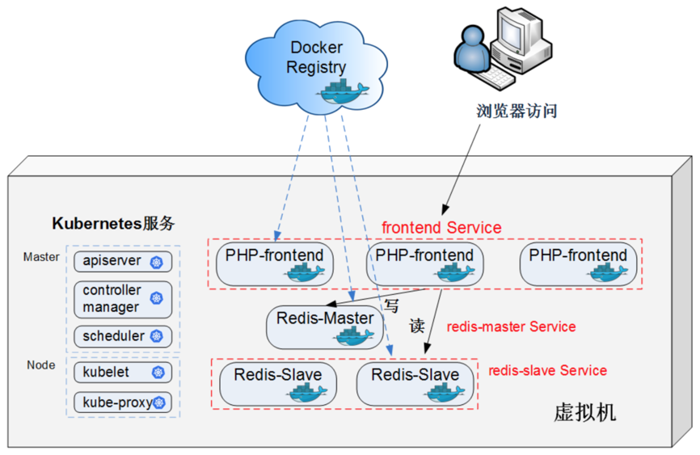
创建redis-master-controller.yaml
xxxxxxxxxxapiVersion: v1kind: ReplicationControllermetadata: name: redis-master labels: name: redis-masterspec: replicas: 1 selector: name: redis-master template: metadata: labels: name: redis-master spec: containers: - name: redis-master image: kubeguide/redis-master ports: - containerPort: 6379其中
kind字段的值为"ReplicationController"，表示这是一个RC；
spec.selector是RC的Pod选择器，即监控和管理拥有这些标签（Label）的Pod实例，确保当前集群上始终有且仅有replicas个Pod实例在运行，这里我们设置replicas=1表示只能运行一个（名为redis-master的）Pod实例，当集群中运行的Pod数量小于replicas时，RC会根据spec.template段定义的Pod模板来生成一个新的Pod实例，labels属性指定了该Pod的标签，注意，这里的labels必须匹配RC的spec.selector，否则此RC就会陷入“只为他人做嫁衣”的悲惨世界中，永无翻身之时。
创建redis-master-service.yaml
xxxxxxxxxxapiVersionv1kindServicemetadata nameredis-master labels nameredis-masterspec portsport6379 targetPort6379 selector nameredis-master其中
metadata.name是Service的服务名（ServiceName），
spec.selector确定了哪些Pod对应到本服务，这里的定义表明拥有redis-master标签的Pod属于redis-master服务，
spec.ports部分中的targetPort属性用来确定提供该服务的容器所暴露（EXPOSE）的端口号，即具体的服务进程在容器内的targetPort上提供服务，而port属性则定义了Service的虚端口。
**创建Service时，K8s都会创建一个Pod间、内互通的一个虚拟VIP，该IP地址是由K8s系统自动分配的**，在其他Pod中无法预先知道某个Service的虚拟IP地址，因此需要一个机制来找到这个服务。为此，**K8s巧妙地使用了Linux环境变量，在每个Pod的容器里都增加了一组Service相关的环境变量，用来记录从Service名到虚拟IP地址的映射关系。**
以redis-master服务为例，在容器的环境变量中会增加下面两条记录：
REDIS_MASTER_SERVICE_HOST=10.254.144.74
REDIS_MASTER_SERVICE_PORT=6379
于是，redis-slave和frontend等Pod中的应用程序就可以通过环境变量REDIS_MASTER_SERVICE_HOST得到redis-master服务的虚拟IP地址，通过环境变量REDIS_MASTER_SERVICE_PORT得到redis-master服务的端口号，这样就完成了对服务地址的查询功能。
创建redis-slave-controller.yaml
xxxxxxxxxxapiVersionv1kindReplicationControllermetadata nameredis-slave labels nameredis-slavespec replicas2 selector nameredis-slave template metadata labels nameredis-slave spec containersnameredis-master imagekubeguide/guestbook-redis-slave envnameGET_HOSTS_FROM valueenv portscontainerPort6379由于在创建redis-slave Pod时，系统自动在容器内部生成与redis-master Service相关的环境变量，所以redis-slave应用程序能够直接使用环境变量REDIS_MASTER_SERVICE_HOST来获取redis-master服务的IP地址。
env的name:GET_HOSTS_FROM,value:env，代表往该container环境变量中放其他Service的IP、端口等生成的环境变量。
创建redis-slave-service.yaml
xxxxxxxxxxapiVersionv1kindServicemetadata nameredis-slave labels nameredis-slavespec portsport6379 selector nameredis-slave创建frontend-controller.yaml
xxxxxxxxxxapiVersionv1kindReplicationControllermetadata namefrontend labels namefrontendspec replicas3 selector namefrontend template metadata labels namefrontend spec containersnamefrontend imagekubeguide/guestbook-php-frontend envnameGET_HOSTS_FROM valueenv portscontainerPort80创建frontend-service.yaml
xxxxxxxxxxapiVersionv1kindServicemetadata namefrontend labels namefrontendspec typeNodePort portsport80 nodePort30001 selector namefrontend这里设置type=NodePort并指定一个NodePort的值，表示使用Node上的物理机端口提供对外访问的能力。需要注意，spec.ports.NodePort的端口号定义有范围限制，默认为30000~32767，如果配置为范围外的其他端口号，则创建Service将会失败。
3. K8s衍生概念介绍
3.1 Node（节点）
Node（节点）是Kubernetes集群中相对于Master而言的工作主机，在较早的版本中也被称为Minion。Node可以是一台物理主机，也可以是一台虚拟机（VM）。在每个Node上运行用于启动和管理Pid的服务Kubelet，并能够被Master管理。在Node上运行的服务进行包括Kubelet、kube-proxy和docker daemon。
Node信息如下：
- Node地址：主机的IP地址，或者Node ID。
- Node运行状态：包括Pending、Running、Terminated三种状态。
- Node Condition（条件）：描述Running状态Node的运行条件，目前只有一种条件----Ready。Ready表示Node处于健康状态，可以接收从Master发来的创建Pod的指令。
- Node系统容量：描述Node可用的系统资源，包括CPU、内存数量、最大可调度Pod数量等。
- 其他：Node的其他信息，包括实例的内核版本号、Kubernetes版本号、Docker版本号、操作系统名称等。
查看Node的详细信息：
kubectl describe node <node_name>
1. Node的管理
Node通常是物理机、虚拟机或者云服务商提供的资源，并不是由Kubernetes创建的。我们说Kubernetes创建一个Node，仅仅表示Kubernetes在系统内部创建了一个Node对象，创建后即会对其进行一系列健康检查，包括是否可以连通、服务是否正确启动、是否可以创建Pod等。如果检查未能通过，则该Node将会在集群中被标记为不可用（Not Ready）。
2. 使用Node Controller对Node进行管理
Node Controller是Kubernetes Master中的一个组件，用于管理Node对象。它的两个主要功能包括：集群范围内的Node信息同步，以及单个Node的生命周期管理。
Node信息同步可以通过kube-controller-manager的启动参数--node-sync-period设置同步的时间周期。
3. Node的自注册
当Kubelet的--register-node参数被设置为true（默认值即为true）时，Kubelet会向apiserver注册自己。这也是Kubernetes推荐的Node管理方式。
Kubelet进行自注册的启动参数如下：
- --apiservers=: apiserver地址；
- --kubeconfig=: 登录apiserver所需凭据/证书的目录；
- --cloud_provider=: 云服务商地址，用于获取自身的metadata；
- --register-node=: 设置为true表示自动注册到apiserver。
4. 手动管理Node
Kubernetes集群管理员也可以手工创建和修改Node对象。当需要这样操作时，先要将Kubelet启动参数中的--register-node参数的值设置为false。这样，在Node上的Kubelet就不会把自己注册到apiserver中去了。
另外，Kubernetes提供了一种运行时加入或者隔离某些Node的方法。具体操作请参考第四章。
3.2 Pod
Pod是Kubernetes的最基本操作单元，包含一个或多个紧密相关的容器，类似于豌豆荚的概念。一个Pod可以被一个容器化的环境看作应用层的“逻辑宿主机”（Logical Host）。一个Pod中的多个容器应用通常是紧耦合的。Pod在Node上被创建、启动或者销毁。
一个Pod内所有容器在同一台主机上运行，不建议在Kubernetes的一个Pod内运行相同应用的多个实例。使用RC来管理Pod，RC中定义Pod副本数量。一组Pod构成了RC。
一个Pod中的应用容器共享同一组资源，如下所述：
- PID命名空间：Pod中的不同应用程序可以看到其他应用程序的进程ID；
- 网络命名空间：Pod中的多个容器能够访问同一个IP和端口范围；
- IPC命名空间：Pod中的多个容器能够使用SystemV IPC或者POSIX消息队列进行通信；
- UTS命名空间：Pod中的多个容器共享一个主机名；
- Volumes（共享存储卷）：Pod中的各个容器可以访问在Pod级别定义的Volumes。
1. 对Pod的定义
对Pod的定义通过Yaml或Json格式的配置文件来完成。下面的配置文件将定义一个名为redis-slave的Pod，其中kind为Pod。在spec中主要包含了Containers（容器）的定义，可以定义多个容器。
redis-slave.yaml
xxxxxxxxxxapiVersionv1kindPodmetadata nameredis-slave labels nameredis-slavespec containersnameslave imagekubeguide/guestbook-redis-slave envnameGET_HOSTS_FROM valueenv portscontainerPort6379Pod的生命周期是通过Replication Controller来管理的。Pod的生命周期过程包括：通过模板进行定义，然后分配到一个Node上运行，在Pod所含容器运行结束后Pod也结束。在整个过程中，Pod处于一下4种状态之一： 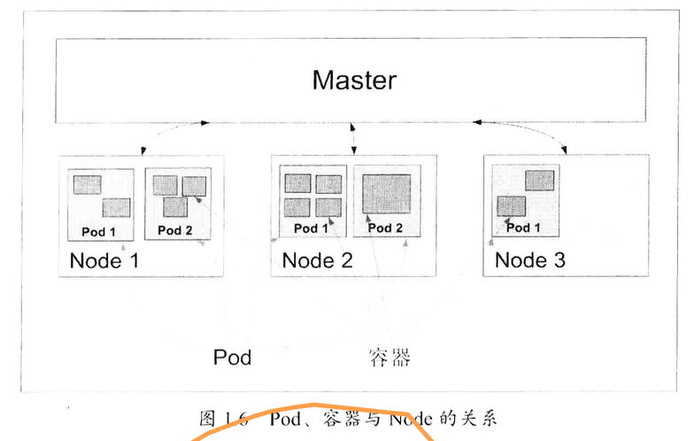
- Pending：Pod定义正确，提交到Master，但其所包含的容器镜像还未完成创建。通常Master对Pod进行调度需要一些时间，之后Node对镜像进行下载也需要一些时间；
- Running：Pod已被分配到某个Node上，且其包含的所有容器镜像都已经创建完成，并成功运行起来；
- Succeeded：Pod中所有容器都成功结束，并且不会被重启，这是Pod的一种最终状态；
- Failed：Pod中所有容器都结束了，但至少一个容器是以失败状态结束的，这也是Pod的一种最终状态。
Kubernetes为Pod设计了一套独特的网络配置，包括：为每个Pod分配一个IP地址，使用Pod名作为容器间通信的主机名等。关于Kubernetes网络的设计原理将在第2章进行详细说明。
3.3 Label（标签）
Label是Kubernetes系统中的一个核心概念。Label以key/value键值对的形式附加到各种对象上，如Pod、Service、RC、Node等。Label定义了这些对象的可识别属性，用来对它们进行管理和选择。Label可以在创建时附加到对象上，也可以在对象创建后通过API进行管理。
在为对象定义好Label后，其他对象就可以使用Label Selector（选择器）来定义其作用的对象了。
Label Selector的定义由多个逗号分隔的条件组成。
xxxxxxxxxx"labels": {"key1": "value1","key2": "value2"}当前有两种Label Selector：基于等式的（Equality-based）和基于集合的（Set-based），在使用时可以将多个Label进行组合来选择。
基于等式的Label Selector使用等式类的表达式来进行选择：
name = redis-slave: 选择所有包含Label中key="name"且value="redis-slave"的对象；
env != production: 选择所有包括Label中的key="env"且value不等于"production"的对象。
基于集合的Label Selector使用集合操作的表达式来进行选择：
name in (redis-master, redis-slave): 选择所有包含Label中的key="name"且value="redis-master"或"redis-slave"的对象；
name not in (php-frontend): 选择所有包含Label中的key="name"且value不等于"php-frontend"的对象。
在某些对象需要对另一些对象进行选择时，可以将多个Label Selector进行组合，使用逗号","进行分隔即可。基于等式的Label Selector和基于集合的Label Selector可以任意组合。例如：
xxxxxxxxxxname=redis-slave,env!=productionname not in (php-frontend),env!=production一般来说，我们会给一个Pod（或其他对象）定义多个Labels，以便于配置、部署等管理工作。例如：部署不同版本的应用到不同的环境中；或者监控和分析应用（日志记录、监控、告警）等。通过对多个Label的设置，我们就可以“多维度”地对Pod或其他对象进行精细的管理。
Replication Controller通过Label Selector来选择要管理的Pod，Service通过Label Selector来选择要管理的RC。
rc定义：
xxxxxxxxxxapiVersionv1kindReplicationControllermetadata nameredis-master labels nameredis-masterspec replicas1 selector nameredis-master template metadata labels nameredis-master spec containersnameredis-master imagekubeguide/redis-master portscontainerPort6379在RC的定义中，template部分定义了Pod信息，template.metadata.labels定义了Pod的Label，即name=redis-slave。然后在RC的spec.selector中指定了name=redis-slave，表示将对所有包含该Label的Pod进行管理。
Service定义：
xxxxxxxxxxapiVersionv1kindServicemetadata nameredis-slave labels nameredis-slavespec portsport6379 selector nameredis-slave在Service的定义中，也通过定义spec.selector为name=redis-slave来选择将哪些具有该Label的Pod加入其Load Balancer的后端列表中去。这样，当客户端访问请求到达该Service时，系统就能够将请求转发到后端具有该Label的一个Pod上去。
使用Label可以给对象创建多组标签，Service、RC等组件则通过Label Selector来选择对象范围，Label和Label Selector共同构成了K8s系统中最核心的应用模型，使得被管理对象能够被精细地分组管理，同事实现了整个集群的高可用性。
3.4 Replication Controller（RC）
Replication Controller是Kubernetes系统中的核心概念，用于定义Pod副本的数量。在Master内，Controller Manager进程通过RC的定义来完成Pod的创建、监控、启停等操作。
根据Replication Controller的定义，Kubernetes能够确保在任意时刻都能运行用于指定的Pod“副本”（Replica）数量。如果有过多的Pod副本在运行，系统就会停掉一些Pod；如果运行的Pod副本数量太少，系统就会再启动一些Pod，总之，通过RC的定义，Kubernetes总是保证集群中运行着用户期望的副本数量。
同时，Kubernetes会对全部运行的Pod进行监控和管理，如果有需要（例如某个Pod停止运行），就会将Pod重启命令提交给Node上的某个程序来完成（如Kubelet或Docker）。
可以说，通过对Replication Controller的使用，Kubernetes实现了应用集群的高可用性，并大大减少了系统管理员在传统IT环境中需要完成的许多手工运维工作（如主机监控脚本、应用监控脚本、故障恢复脚本等）。
对Replication Controller的定义使用Yaml或Json格式的配置文件来完成。以redis-slave为例，在配置文件中通过spec.template定义Pod的属性（这部分定义与Pod的定义是一致的），设置spec.replicas=2来定义Pod副本的数量。
通常，Kubernetes集群中不止一个Node，假设一个集群有3个Node，根据RC的定义，系统将可能在其中的两个Node上创建Pod。
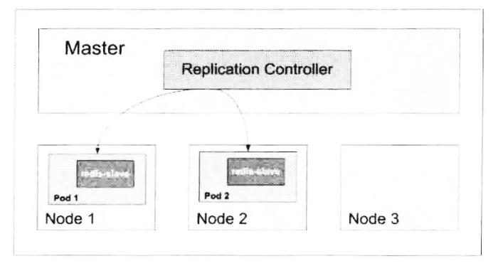
如图在两个Node上一个Pod，创建redis-slave的情形，两个Node上各放一个副本。
假设Node2上的Pod2意外终止，根据RC定义的replicas数量为2，K8s将会自动创建并启动一个新的Pod，以保证整个集群中始终有两个redis-slave Pod在运行。
如图所示，系统可能选择Node3或者Node1来创建一个新的Pod。
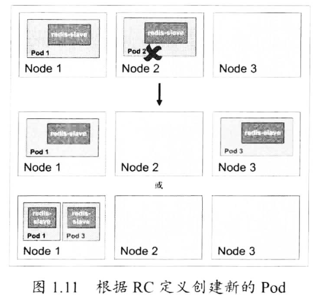
在运行时，我们可以通过修改RC的副本数量，来实现Pod的动态缩放（Scaling）。
RC缩容
K8s提供了kubectl scale命令来一键完成：
xxxxxxxxxx[root@instance-xcul3 ~]# kubectl get rcNAME DESIRED CURRENT READY AGEfrontend 3 3 3 19hredis-master 1 1 1 20hredis-slave 2 2 2 19h[root@instance-xcul3 ~]# kubectl scale rc redis-slave --replicas=3replicationcontroller "redis-slave" scaled[root@instance-xcul3 ~]# kubectl get rcNAME DESIRED CURRENT READY AGEfrontend 3 3 3 19hredis-master 1 1 1 20hredis-slave 3 3 2 19h[root@instance-xcul3 ~]# kubectl get podsNAME READY STATUS RESTARTS AGEfrontend-2p8mk 1/1 Running 0 19hfrontend-55s75 1/1 Running 0 19hfrontend-j5xv6 1/1 Running 0 19hredis-master-lf3tb 1/1 Running 0 20hredis-slave-2006m 1/1 Running 0 19hredis-slave-cclvr 0/1 ContainerCreating 0 7sredis-slave-l3qt5 1/1 Running 0 19h[root@instance-xcul3 ~]# kubectl get podsNAME READY STATUS RESTARTS AGEfrontend-2p8mk 1/1 Running 0 19hfrontend-55s75 1/1 Running 0 19hfrontend-j5xv6 1/1 Running 0 19hredis-master-lf3tb 1/1 Running 0 20hredis-slave-2006m 1/1 Running 0 19hredis-slave-cclvr 1/1 Running 0 36sredis-slave-l3qt5 1/1 Running 0 19h[root@instance-xcul3 ~]#Scaling的执行结果如图所示： 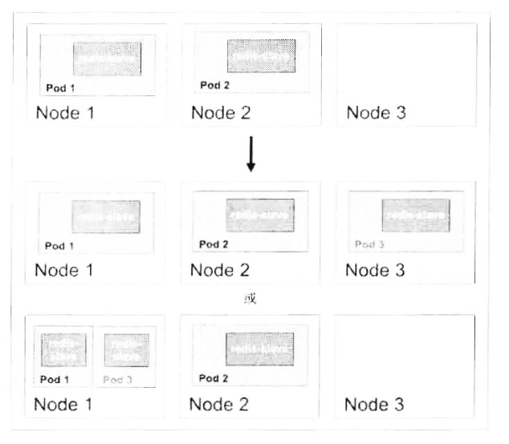
需要注意的是，删除RC并不会影响通过该RC已创建好的Pod。为了删除所有Pod，可以设置replicas值为0，然后更新该RC。另外，客户端工具kubectl提供了stop和delete命令来完成一次性删除RC和RC控制的全部Pod。通过修改RC可以实现应用的滚动升级（Rolling Update），具体的操作方法详见第4章。
3.5 Service（服务）
在Kubernetes的世界里，虽然每个Pod都会被分配一个单独的IP地址，这个IP地址会随着Pod的销毁而消失。这就引出一个问题：如果有一组Pod组成一个集群来提供服务，那么如何来访问它们呢？
Kubernetes的Service（服务）就是用来解决这个问题的核心概念。
一个Service可以看作一组提供相同服务的Pod的对外访问接口。Service作用于哪些Pod是通过Label Selector来定义的。
再看看上一节的例子，redis-slave Pod运行了两个副本（replicas），这两个Pod对于前段程序（frontend）来说没有区别，所以前段程序并不关系是哪个后端副本在提供服务。并且后端redis-slave在发生变化时，前段也无须跟踪这些变化。“Service”就是用来实现这种解耦的抽象概念。
在Kubernetes中，Service（服务）是分布式集群架构的核心，一个Service对象拥有如下关键特性：
- 拥有一个唯一指定的名字
- 拥有一个虚拟IP（Cluster IP、Service IP、或VIP）和端口号
- 能够体统某种远程服务能力
- 被映射到了提供这种服务能力的一组容器应用上
1. 对Service的定义
对Service的定义同样使用Yaml或Json格式的配置文件来完成。以redis-slave服务的定义为例：
xxxxxxxxxxapiVersionv1kindServicemetadata nameredis-slave labels nameredis-slavespec portsport6379 selector nameredis-slave通过该定义，K8s将会创建一个名为“redis-slave”的服务，并在6379端口上监听。spec.selector的定义表示该Service将包含所有局域“name=redis-slave” Label的Pod。
在Pod正常启动后，系统将会根据Service的定义创建出与Pod对应的Endpoint（端点）对象，以建立起Service与后端Pod的对应关系。随着Pod的创建、销毁，Endpoint对象也将被更新。Endpoint对象主要由Pod的IP地址和容器需要监听的端口号组成。通过kubectl get endpoints命令可以查看，显示为Ip:Port的格式。
xxxxxxxxxx[root@instance-xcul3 helloworld]# kubectl get rcNAME DESIRED CURRENT READY AGEfrontend 3 3 3 20hredis-master 1 1 1 21hredis-slave 3 3 3 21h[root@instance-xcul3 helloworld]# kubectl get servicesNAME CLUSTER-IP EXTERNAL-IP PORT(S) AGEfrontend 10.254.11.253 <nodes> 80:30001/TCP 20hkubernetes 10.254.0.1 <none> 443/TCP 21hredis-master 10.254.228.156 <none> 6379/TCP 21hredis-slave 10.254.165.49 <none> 6379/TCP 20h[root@instance-xcul3 helloworld]# kubectl get endpointsNAME ENDPOINTS AGEfrontend 172.17.0.5:80,172.17.0.6:80,172.17.0.7:80 20hkubernetes 192.168.0.12:6443 21hredis-master 172.17.0.3:6379 21hredis-slave 172.17.0.2:6379,172.17.0.4:6379,172.17.0.8:6379 20h[root@instance-xcul3 helloworld]#[root@instance-xcul3 helloworld]# lsfrontend-controller.yaml redis-master-controller.yaml redis-slave-controller.yamlfrontend-service.yaml redis-master-service.yaml redis-slave-service.yaml[root@instance-xcul3 helloworld]# kubectl delete -f frontend-service.yamlservice "frontend" deleted[root@instance-xcul3 helloworld]# kubectl get endpointsNAME ENDPOINTS AGEkubernetes 192.168.0.12:6443 21hredis-master 172.17.0.3:6379 21hredis-slave 172.17.0.2:6379,172.17.0.4:6379,172.17.0.8:6379 21h[root@instance-xcul3 helloworld]#2. （看service创建EP，回来看）Pod的IP地址和Service的Cluster IP地址
Pod的IP地址是Docker Daemon根据docker0网桥的IP地址段进行分配的，但Service的Cluster IP地址是Kubernetes系统中的虚拟IP地址，由系统动态分配。
Service的Cluster IP地址相对于Pod的IP地址来说相对稳定，Service被创建时即被分配一个IP地址，在销毁该Service之前，这个IP地址都不会再变化了。而Pod在Kubernetes集群中生命周期较短，可能被ReplicationContrller销毁、再次创建，新创建的Pod将会分配一个新的IP地址。
3. 外部访问Service
**由于Service对象在Cluster IP Range池中分配到的IP只能在内部访问，所以其他Pod都可以无障碍地访问到它。但如果这个Service作为前端服务，准备为集群外的客户端提供服务，我们就需要给这个服务提供公共IP了。**
Kubernetes支持两种对外提供服务的Service的type定义：NodePort和LoadBalancer。
1. NodePort
在定义Service时指定spec.type=NodePort，并指定spec.ports.nodePort的值，**系统就会在Kubernetes集群中的每个Node上打开一个主机上的真实端口号。**这样，能够访问Node的客户端都就能通过这个端口号访问到内部的Service了。
以php-frontend service的定义为例，nodePort=80，这样，在每一个启动了该php-frontend Pod的Node节点上，都会打开80端口。
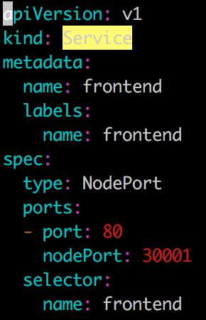
假设有3个php-front Pod运行在3个不同的Node上，客户端访问其中任意一个Node都可以访问到这个服务。
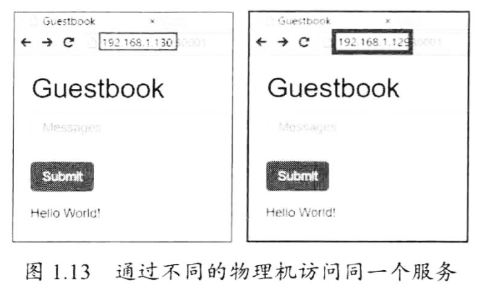
2. LoadBalancer
如果云服务商支持外接负载均衡器，则可以通过spec.type=LoadBalaner定义Service，同时需要指定负载均衡器的IP地址。使用这种类型需要指定Service的nodePort和clusterIP。例如：
xxxxxxxxxxapiVersionv1kindServicemetadata "kind" "Service" "apiVersion""v1" "metadata" "name""my-service" "spec" "type""LoadBalaner" "clusterIP""10.0.171.239" "selector" "app""MyApp" "ports" "protocol""TCP" "port"80 "targetPort"9376 "nodePort"30061 "status" "loadBalancer" "ingress" "ip""146.148.47.155" 在这个例子中，status.loadBalancer.ingress.ip设置的146.148.47.155为云服务商提供的负载均衡器的IP地址。
之后，对该Service的访问请求将会通过LoadBalancer转发到后端Pod上去，负载分发的实现方式则依赖于云服务商提供的LoadBalancer的实现机制。如何分发，自己实现。
3. 多端口的服务
在很多情况下，一个服务都需要对外暴露多个端口号。在这种情况下，可以通过端口进行命名，使各Endpoint不会因重名而产生歧义。例如：
xxxxxxxxxx "kind""Service" "apiVersion""v1" "metadata" "name""my-service" "sepc" "selector" "app""MyApp" "ports" "name""http" "protocol""TCP" "port"： 80 "targetPort"9376 "name""https" "protocol""TCP" "port"： 443 "targetPort"9377 3.6 Volume（存储卷）
Volume是Pod中能够被多个容器访问的共享目录。Kubernetes的Volume概念与Docker的Volume比较类似，但不完全相同。Kubernetes中的Volume与Pod生命周期相同，但与容器的生命周期不相关。当容器终止或者重启时，Volume中的数据也不会丢失。另外，Kubernetes支持多种类型的Volume，并且一个Pod可以同时使用任意多个Volume。 Kubernetes提供了非常丰富的Volume类型，下面逐一进行说明。
EmptyDir
一个EmptyDir Volume是在Pod分配到Node时创建的。从它的名称就可以看出，它的初始内容为空。在同一个Pod中所有容器可以读和写EmptyDir中的相同文件。当Pod从Node上移除时，EmptyDir中的数据也会永久删除。
临时空间，例如用于某些应用程序运行时所需的临时目录，且无须永久保留；
长时间任务的中间过程CheckPoint临时保存目录；
一个容器需要从另一个容器中获取数据的目录（多容器共享目录）。
目前，用户无法控制EmptyDir使用的介质种类。如果kubelet的配置是使用硬盘，那么所有EmptyDirs都将创建在该硬盘上。Pod在将来可以设置EmptyDir是位于硬盘、固态硬盘上还是基于内存的tmpfs上。
现在创建一个Pod使用emptyDir， busybox-pod.yaml：
xxxxxxxxxxapiVersionv1kindPodmetadata namebusybox labels namebusyboxspec containersimagebusybox commandsleep"3600" imagePullPolicyIfNotPresent namebusybox volumeMountsmountPath/busybox-data namedata volumesnamedata emptyDirPod运行后，docker inspect它的容器：
xxxxxxxxxx"Volumes" "/busybox-data""/var/lib/kubelet/pods/da47d6b1-374c-11e5-ad0f-005056817c3e/volumes/kubernetes.io~empty-dir/data" "/dev/termination-log""/var/lib/kubelet/pods/da47d6b1-374c-11e5-ad0f-005056817c3e/containers/busybox/4f4c540ea667e78fca68886d5b5700abb652523dc39d3ca36bb2573ea016be21" , "VolumesRW" "/busybox-data"true "/dev/termination-log"true , "VolumesRelabel" "/busybox-data""" "/dev/termination-log""" 可以看到容器挂载配置的emptyDir：
xxxxxxxxxx/var/lib/kubelet/pods/<id>/volumes/kubernetes.io~empty-dir/data =》 /busybox-datahostPath
在Pod上挂载宿主机上的文件或目录。
容器应用程序生成的日志文件需要永久保存，可以使用宿主机的告诉文件系统进行存储。
需要访问宿主机上Docker引擎内部数据结构的容器应用，可以通过定义hostPath为宿主机/var/lib/docker目录，使容器内部应用可以直接访问Docker的文件系统。
在使用这种类型的Volume时，需要注意：
在不同的Node上具有相同配置的Pod，可以会因为宿主机上的目录和文件不同而导致对Volume上目录和文件的访问结果不一致；
如果使用了资源配额管理，则K8s无法将hostPath在宿主机上使用的资源纳入管理。
以redis-master为例，使用宿主机的/data目录作为其容器内部挂载点/data的volume。
xxxxxxxxxxapiVersionv1kindReplicationControllermetadata nameredis-master labels nameredis-masterspec replicas1 selector nameredis-master template metadata labels nameredis-master spec volumesname"persistent-storage" hostPath path"/data" containersnameredis-master imagekubeguide/redis-master portscontainerPort6379 volumeMountsname"persistent-storage" mountPath"/data"在配置文件中，我们先在Pod的spec部分定义一个volume，然后在containers中给容器定义volumeMounts，name为volume的名称。
hostPath允许挂载Node上的文件系统到Pod里面去。如果Pod有需要使用Node上的东西，可以使用hostPath，不过不建议使用，因为理论上Pod不应该感知Node的。 busybox-pod.yaml：
xxxxxxxxxxapiVersionv1kindPodmetadata namebusybox labels namebusyboxspec containersimagebusybox commandsleep"3600" imagePullPolicyIfNotPresent namebusybox volumeMountsmountPath/busybox-data namedata volumeshostPath path/tmp/data namedatadocker inspect:
xxxxxxxxxx"Volumes" "/busybox-data""/tmp/data" "/dev/termination-log""/var/lib/kubelet/pods/522b7dd3-374f-11e5-ad0f-005056817c3e/containers/busybox/d6b5adcaf869ad290a3c4602313fc813451eabcc47d4583ee6dd4f6ba9fd8009","VolumesRW" "/busybox-data"true "/dev/termination-log"true,"VolumesRelabel" "/busybox-data""" "/dev/termination-log"""emptyDir和hostPath很多场景是无法满足持久化需求，因为在Pod发生迁移的时候，数据都无法进行转移的，这就需要分布式文件系统的支持。
gcePersistentDisk
使用这种类型的Volume表示使用谷歌计算引擎（Google Compute Engine，GCE）上永久磁盘（Persistent Disk，PD）上的文件。与EmptyDir不同，PD上的内容会永久保存，当Pod被删除时，PD只是被卸载（Unmount），但不会被删除。需要注意的是，你需要先创建一个永久磁盘（PD）才能使用gcePersistentDisk。
使用gcePersistentDisk有一些限制条件：
Node（运行kubelet的节点）需要是GCE虚拟机；
这些虚拟机需要与PD存在于相同的GCE项目和Zone中。
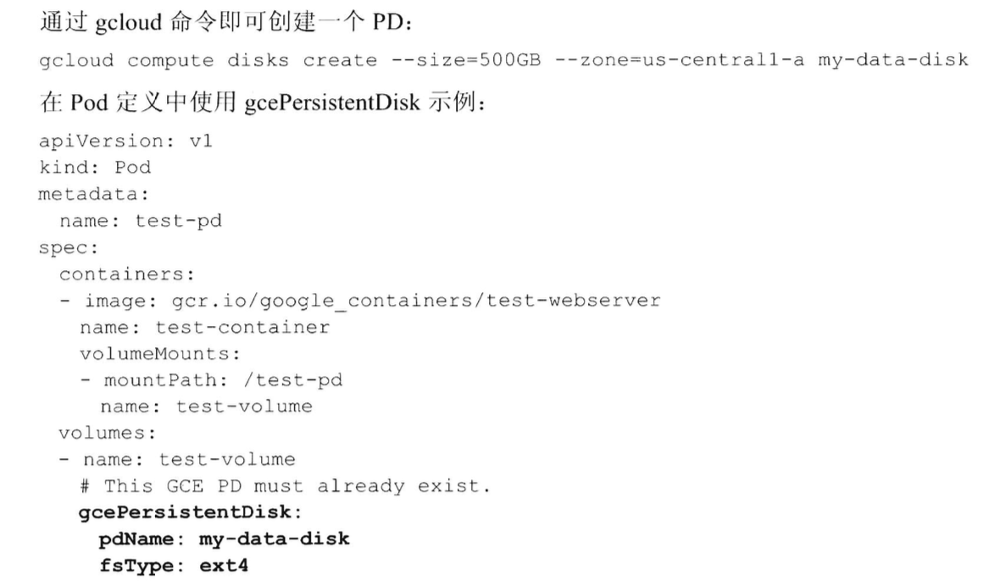
awsElasticBlockStore
与GCE类似，该类型的Volume使用Amazon提供的Amazon Web Service（AWS）的EBS Volume，并可以挂在到Pod中去。需要注意到是，需要首先创建一个EBS Volume才能使用awsElasticBlockStore。
使用awsElasticBlockStore的一些限制条件如下：
Node（运行kubelet的节点）需要时AWS EC2实例；
这些AWS EC2实例需要与EBS volume存在于相同的region和availability-zone中；
EBS只支持单个EC2实例mount一个volume。
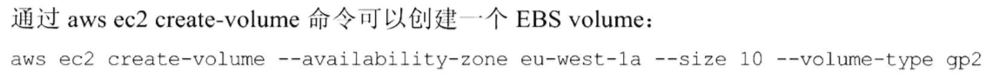
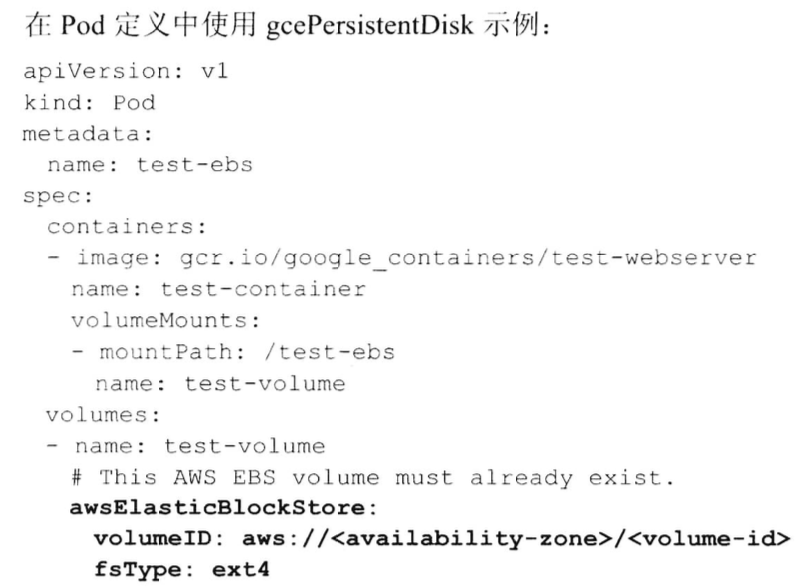
nfs
使用NFS（网络文件系统）提供的共享目录挂载到Pod中。在系统中需要一个运行中的NFS系统。
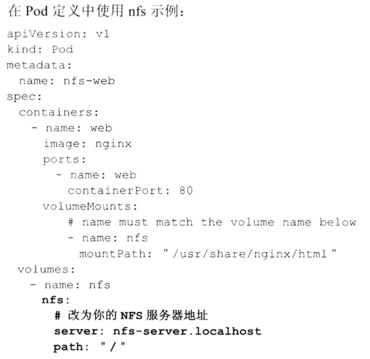
NFS 是Network File System的缩写，即网络文件系统。Kubernetes中通过简单地配置就可以挂载NFS到Pod中，而NFS中的数据是可以永久保存的，同时NFS支持同时写操作。 下面的例子将在Kubernetes上部署一个NFS服务端,然后部署一个Pod使用该NFS服务端 nfs-server-pod.yaml：
xxxxxxxxxxapiVersionv1kindPodmetadata namenfs-server labels rolenfs-serverspec containersnamenfs-server imagejsafrane/nfs-data portsnamenfs containerPort2049 securityContext privilegedtrue注意：运行nfs-server-pod需要kubelet开启privileged
nfs-service.yaml：
xxxxxxxxxxkindServiceapiVersionv1metadata namenfs-serverspec clusterIP10.254.234.223 portsport2049 selector rolenfs-server创建完可以查看下NFS的配置：
xxxxxxxxxx$ kubectl exec nfs-server cat /etc/exports /mnt/data *(rw,sync,no_root_squash,insecure,fsid=0)$ kubectl exec nfs-server cat /mnt/data/index.htmlHello world!可以看到export了/mnt/data最为/， 并且/mnt/data下有个index.html
NFS 服务端安装完成后，需要在Kubernetes的每个Node安装NF客户端：
xxxxxxxxxx$ yum install nfs-utils现在创建一个Pod使用NFS:
xxxxxxxxxxapiVersionv1kindPodmetadata namenfs-webspec containersnameweb imagenginx portsnameweb containerPort80 volumeMounts # name must match the volume name belownamenfs mountPath"/usr/share/nginx/html" volumesnamenfs nfs # FIXME: use the right hostname server10.254.234.223 path"/"该Pod启动一个nginx，然后挂载NFS Server的/到/usr/share/nginx/html， 即使用其中的index.html。
查看Pod的容器，可以看到容器挂载
xxxxxxxxxx/var/lib/kubelet/pods/<id>/volumes/kubernetes.io~nfs/nfs=> /usr/share/nginx/html而实际上/var/lib/kubelet/pods//volumes/kubernetes.io~nfs/nfs挂载到NFS Server，效果如以下命令：
xxxxxxxxxxmount -t nfs 10.254.234.223:/ /var/lib/kubelet/pods/<id>/volumes/kubernetes.io~nfs/nfsiscsi
使用iSCSI存储设备上的目录挂载到Pod中。
glusterfs
使用开源GlusterFS网络文件系统的目录挂载到Pod中。
GlusterFS是一个开源的分布式文件系统，具有强大的横向扩展能力，通过扩展能够支持数PB存储容量和处理数千客户端。同样地，Kubernetes支持Pod挂载到GlusterFS，这样数据将会永久保存。
首先需要一个GlusterFS环境，本文使用2台机器（CentOS7）安装GlusterFS服务端，在2台机器的 /etc/hosts配置以下信息：
xxxxxxxxxx192.168.3.150 gfs1192.168.3.151 gfs2在2台机器上安装：
xxxxxxxxxx$ wget http://dl.fedoraproject.org/pub/epel/7/x86_64/e/epel-release-7-5.noarch.rpm$ rpm -ivh epel-release-7-5.noarch.rpm$ wget -P /etc/yum.repos.d http://download.gluster.org/pub/gluster/glusterfs/LATEST/EPEL.repo/glusterfs-epel.repo$ yum install glusterfs-server$ service glusterd start注意: GlusterFS服务端需要关闭SELinux：修改/etc/sysconfig/selinux中SELINUX=disabled。然后清空iptables: iptables -F安装后查询状态：
xxxxxxxxxx$ service glusterd status添加集群： 在gfs1上操作：
xxxxxxxxxx$ gluster peer probe gfs2在gfs2上操作：
xxxxxxxxxxgluster peer probe gfs1创建volume ： 在gfs1上操作：
xxxxxxxxxx$ mkdir /data/brick/gvol0$ gluster volume create gvol0 replica 2 gfs1:/data/brick/gvol0 gfs2:/data/brick/gvol0$ gluster volume start gvol0$ gluster volume info安装成功的话可以挂载试验下：
xxxxxxxxxx$ mount -t glusterfs gfs1:/gvol0 /mntGlusterFS服务端安装成功后，需要在每个Node上安装GlusterFS客户端:
xxxxxxxxxx$ yum install glusterfs-client接着创建GlusterFS Endpoint，gluasterfs-endpoints.json：
xxxxxxxxxx{ "kind": "Endpoints", "apiVersion": "v1", "metadata": { "name": "glusterfs-cluster" }, "subsets": [ { "addresses": [ { "IP": "192.168.3.150" } ], "ports": [ { "port": 1 } ] }, { "addresses": [ { "IP": "192.168.3.151" } ], "ports": [ { "port": 1 } ] } ]}最后创建一个Pod挂载GlusterFS Volume, busybox-pod.yaml:
xxxxxxxxxxapiVersionv1kindPodmetadata namebusybox labels namebusyboxspec containersimagebusybox commandsleep"3600" imagePullPolicyIfNotPresent namebusybox volumeMountsmountPath/busybox-data namedata volumesglusterfs endpointsglusterfs-cluster pathgvol0 namedata查看Pod的容器，可以看到容器挂载
xxxxxxxxxx/var/lib/kubelet/pods/<id>/volumes/kubernetes.io~glusterfs/data => /busybox-data在kubernetes.io~glusterfs/data目录下执行查询：
xxxxxxxxxx$ mount | grep gvol0192.168.3.150:gvol0 on /var/lib/kubelet/pods/<id>/volumes/kubernetes.io~glusterfs/data type fuse.glusterfs (rw,relatime,user_id=0,group_id=0,default_permissions,allow_other,max_read=131072)rbd
使用Linux块设备共享存储（Rados Block Device）挂载到Pod中。
gitRepo
通过挂载一个空目录，并从GIT库clone一个git respository以供Pod使用。
secret
一个secret volume用于为Pod提供加密的信息，你可以将定义在Kubernetes中的secret直接挂载为文件让Pod访问。secret volume是通过tmfs（内存文件系统）实现的，所以这种类型的volume总是不会持久化的。
persistentVolumeClaim
从PV（PersistentVolume）中申请所需的空间，PV通常是一种网络存储，例如GCEPersistentDisk、AWSElasticBlockStore、NFS、iSCSI等。
3.7 Namespace（命名空间）
Namespace（命名空间）是Kubernetes系统中的另一个非常重要的概念，通过将系统内部的对象“分配”到不同的Namespace中，形成逻辑上分组的不同项目、小组或用户组，便于不同的分组在共享使用整个集群的资源的同时还能被分别管理。
Kubernetes集群在启动后，会创建一个名为“default”的Namespace，通过Kubectl可以查看到。
xxxxxxxxxx[root@instance-xcul3 ~]# kubectl get namespacesNAME STATUS AGEdefault Active 1dkube-system Active 1d[root@instance-xcul3 ~]#接下来，如果不特别指明Namespace，则用户创建的Pod、RC、Service都将被系统创建到名为“default”的Namespace中。用户可以根据需要创建新的Namespace，通过如下namespace-dev.yaml文件进行创建：
xxxxxxxxxxapiVersionv1kindNamespacemetadata namedevelopment再次查看系统中的Namespace：
xxxxxxxxxx[root@instance-xcul3 helloworld]# kubectl get namespacesNAME STATUS AGEdefault Active 1ddevelopment Active 12skube-system Active 1d接着，在创建Pod时，可以指定Pod属于哪个Namespace：
busybox-pod.yaml
xxxxxxxxxxapiVersionv1kindPodmetadata namebusybox namespacedevelopmentspec containersimagegcr.io/google_containers/busybox commandsleep"3600" namebusybox在集群中，新创建的Pod将会属于“development”命名空间。
此时，使用kubectl get命令查看将无法显示：
xxxxxxxxxx[root@instance-xcul3 helloworld]# kubectl get podsNAME READY STATUS RESTARTS AGEfrontend-2p8mk 1/1 Running 0 1dfrontend-55s75 1/1 Running 0 1dfrontend-j5xv6 1/1 Running 0 1dredis-master-lf3tb 1/1 Running 0 1dredis-slave-2006m 1/1 Running 0 1dredis-slave-cclvr 1/1 Running 0 1dredis-slave-l3qt5 1/1 Running 0 1d[root@instance-xcul3 helloworld]#这是因为如果不加参数，kubectl get命令将仅显示属于“default”命令空间的对象。
可以再kubectl命令中假如--namespace参数来查看某个命名空间中的对象：
xxxxxxxxxx[root@instance-xcul3 helloworld]# kubectl get pods --namespace=developmentNAME READY STATUS RESTARTS AGEbusybox 0/1 ImagePullBackOff 0 6m[root@instance-xcul3 helloworld]#使用Namespace来组织Kubernetes的各种对象，可以实现对用户的分组，即“多租户”管理。对不同的租户还可以进行单独的资源配额设置和管理，使得整个集群的资源配置非常灵活、方便。
关于多租户配额的详细配置方法请参考第4章中的详细介绍。
3.8 Annotation（注解）
Annotation与Label类似，也使用key/value键值对的形式进行定义。
Label具有严格的命名规则，它定义的是Kubernetes对象的元数据（Metadata），并且用于Label Selector。
Annotation则是用户任意定义的“附加”信息，以便于外部工具进行查找。
用Annotation来记录的信息包括：
- build信息、release信息、Docker镜像信息等，例如时间戳、release id号、PR号、镜像hash值、docker registry地址等；
- 日志库、监控库、分析库等资源库的地址信息；
- 程序调试工具信息，例如工具名称、版本号等；
- 团队的联系信息，例如电话号码、负责人名称、网址等。
4. Kubernetes集群环境安装
Kubernetes安装参考【从理论到生产环境实战：掌握Docker大规模部署和管理｜翻转课堂】的【3 Kubernetes容器集群解决方案】安装过程。
配置Kubernetes各个进程为LINUX Service，参考【Kubernetes权威指南——从Docker到Kubernetes实践全接触】的【第1章 Kubernetes入门】的【6 Kubernetes安装与配置】
K8s要求容器都必须是前台启动。
对于容器内的进程，我们可以使用Supervisor进行进程管理。
5. Kubernetes总体架构
在集群管理方面，Kubernetes将集群中的机器划分为一个Master节点和一群工作节点（Node）。
其中，
- etcd单独部署
- 在Master上运行API Server（进程kube-apiserver）、Controller Manager（进程kube-controller-manager）和Scheduler（进程kube-scheduler）三个组件，这些进程实现了整个集群的资源管理、Pod调度、弹性伸缩、安全控制、系统监控和纠错等管理能力，并且都是全自动完成的。
- 在每个Node上运行Kubelet、Proxy（进程kube-proxy）和Docker Daemon三个组件，这些服务进程负责Pod的创建、启动、监控、重启、销毁以及实现软件模式的负载均衡器。
- 另外在集群内所有节点上都可以运行Kubectl命令行工具，它提供了Kubernetes的集群管理工具集。
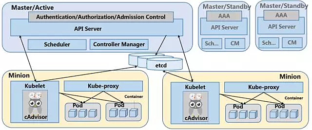

etcd是高可用的key/value存储系统，用于持久化存储集群中所有的资源对象，例如集群中的Node、Service、Pod、RC、Namespace等。
API Server则提供了操作etcd的封装接口API，以REST方式提供服务，这些API基本上都是集群中资源对象的增删改查及监听资源变化的接口，比如创建Pod，创建RC，监听Pod的变化等接口。API Server是连接其他所有服务组件的枢纽。
1. 简单演示以RC创建和相关Service创建完整流程
下面我们以RC与相关Service创建的完整流程为例，来说明K8s里各个服务（组件）的作用以及它们之间的交互关系。
创建RC过程：
- 我们通过kubectl提交一个创建RC的请求（假设Pod副本数为1），该请求通过API Server被写入etcd中，
- 此时Controller Manager通过API Server的监听资源变化的接口监听到这个RC事件，分析后，发现当前及群众还没有它所需要的Pod实例，于是根据RC里的Pod模板定义生成一个Pod对象，通过API Server写入etcd中，
- 接下来，此事件被Scheduler发现，它立刻执行一个复杂的调度流程，为这个新Pod选定一个落户的Node，可称这个过程为绑定（Pod Binding），然后又通过API Server将这一结果写入到etcd中，
- 随后，目标Node上运行的kubelet进程通过API Server检测到这个“新生的”Pod并且按照它的定义，启动该Pod并任劳任怨地负责它的下半生，直到Pod的生命走到尽头。
创建Service过程：
- 随后，我们通过kubectl提交一个映射到该Pod的Service的创建请求，该请求通过API Server被写入etcd中，
- 此时Controller Manager通过API Server的监听资源变化的接口监听到这个RC事件，Controller Manager会通过Label标签查询到相关联的Pod实例，然后生成Service的Endpoints信息（读取所有Pod的Docker daemon分配的IP）并通过API Server写入到etcd中。
- 接下来，所有Node上运行的Proxy进程通过API Server查询并监听Service对象与其对应的Endpoints信息，建立一个软件方式的负载均衡器来实现Service访问到后端Pod的流量转发功能。
从上面的分析来看，K8s的各个组件的功能是很清晰的。
- API Server：提供了资源对象的唯一操作入口，其他所有组件都必须通过它提供的API来操作资源数据，通过对相关的资源数据“全量查询”+“变化监听”，这些组件可以很“实时”地完成相关的业务功能，比如某个新的Pod一旦被提交到API Server中，Controller Manager就会立刻发现并开始调度。
- Controller Manager：集群内部的管理控制中心，其主要目的是实现K8s集群的故障检测和恢复的自动化工作，比如根据RC的定义完成Pod的复制或移除，以确保Pod实例数符合RC副本的定义；根据Service与Pod的管理关系，完成服务的Endpoints对象的创建和更新；其他诸如Node的发现、管理和状态监控、死亡容器所占磁盘空间及本地缓存的镜像文件的清理等工作也是由Controller Manager完成的。
- Scheduler：集群中的调度器，负责Pod在集群节点中的调度分配。
- Kubelet：负责本Node节点上的Pod的创建、修改、监控、删除等全生命周期管理，同时kubelet定时“上报”本Node的状态信息到API Server里。
- Proxy：实现了Service的代理及软件模式的负载均衡器。
在K8s集群内部的客户端可以直接使用kubectl命令管理集群。
Kubectl Proxy是API Server的一个反向代理，在K8s集群外部的客户端可以通过Kubectl Proxy来访问API Server。
Kube-proxy进程为每个Service都建立一个”服务代理对象“，它包括一个用于监听此服务请求的SocketServer，SocketServer的端口是随机选择的一个本地空闲端口。此外，kube-proxy内部也创建了一个”负载均衡器组件“，用来实现SocketServer上收到的连接到后端多个Pod连接之间的负载均衡和会话保持能力。具体执行过程看后面“kube-proxy进程”节详细介绍。
API Server内部有一套完备的安全机制，包括认证、授权及准入控制等相关模块。API Server在收到一个REST请求后，会首先执行认证、授权和准入控制的相关逻辑，过滤掉非法请求，然后将请求发送给API Server中的REST服务模块去执行资源的具体操作逻辑。
在Node节点运行的Kubelet服务中内嵌了一个cAdvisor服务，cAdvisor是谷歌的另外一个开源项目，用于实时监控Docker上运行的容器的性能指标，在第4章会详细介绍它。
各个组件详细讲解
1. Master端进程
API Server（kube-apiserver）进程
API Server启动参数及访问方式
总结下来，Kubernetes API Server有如下功能和地位：
- 提供了集群管理的API接口；
- 成为集群内各个功能模块之间数据交互和通信的中心枢纽；
- 拥有完备的集群安全机制。
如何访问Kubernetes API，Kubernetes API通过一个kube-apiserver的进程提供服务，该进程运行在Kubernetes Master节点上，默认的情况下，监听两个端口：
- 本地端口: 默认值为8080，默认的可请求IP地址限制是只能“localhost”，用于接收HTTP请求，非认证授权的HTTP请求通过该端口访问API Server。可通过修改API Server的启动参数，修改默认端口修改启动参数“—insecure-port”，修改默认的可请求IP地址限制修改启动参数“—insecure-bind-address”。
- 安全端口：默认值为6443，默认的可请求IP地址限制是非本地网络接口，用于接收HTTPS请求，用于基于Token文件或者客户端证书及HTTP Base的认证，用于基于策略的授权，Kubernetes默认情况下不启动HTTPS安全访问机制。可通过修改API Server的启动参数，修改默认端口修改启动参数“—secure-port”，修改默认的可请求IP地址限制修改启动参数“—secure-bind-address”。
用户可以通过编程方式访问API接口，也可以通过curl命令来直接访问它，
在Master节点上访问API Server：
xxxxxxxxxx$ curl http://localhost:8080/ap/api在其他节点上访问API Server：
xxxxxxxxxx$ curl $APISERVER/api --header "Authorization:Bearer $TOKEN" -insecure \{ \ "versions" : [ "v1" \ ] \}参数$TOKEN为用户的Token，用于安全验证。后面【安全机制的原理】详细讲解K8s的集群安全控制。对于外部访问API Server方便，不需要TOKEN文件或客户端证书或HTTP Base认证，K8s提供了Kubectl Proxy简化这些操作。
API Server 存入、watch工作机制
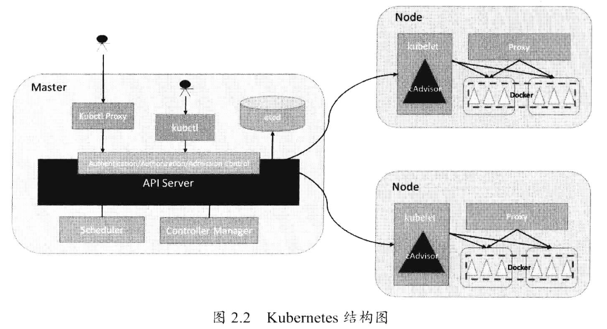
从图中看出，API Server作为集群的核心，负责集群各功能模块之间的通信。集群内的功能模块通过API Server将信息存入etcd，其他模块通过API Server（用get、list或watch方式）读取这些信息，从而实现模块之间的信息交互。
比如，Node节点上的Kubelet每隔一个时间周期，通过API Server报告自身状态，API Server接收到这些信息后，将节点状态信息保存到etcd中。Controller Manager中的Node Controller通过API Server定期读取这些节点状态信息，并做相应处理。
又比如，Scheduler监听到某个Pod创建的信息后，检索所有符合该Pod要求的节点列表，并将Pod绑定到节点列表中最符合要求的节点上；如果Scheduler监听到某个Pod被删除，则调用API Server删除该Pod资源对象。
Kubelet监听Pod信息，如果监听到Pod对象被删除，则删除本节点上的相应的Pod实例；如果监听到修改Pod信息，则Kubelet监听到变化后，会相应地修改本节点的Pod实例等。
为了缓解集群各模块对API Server的访问压力，各功能模块都采用缓存机制来缓存数据。各功能模块定时从API Server获取指定资源对象信息（通过list及watch方式），然后将这些信息保存到本地缓存，功能模块在某些情况下不直接访问API Server，而是通过访问缓存数据来间接访问API Server，当听到有变化，才更新本地数据。
访问API Server提供Node、Service、Pod等Rest接口
集群外系统可以通过API Server提供接口管理Node节点，该接口的路径为/api/v1/proxy/nodes/{name}。 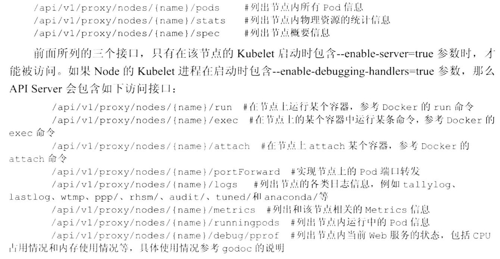
通过API Server访问Pod提供的服务。 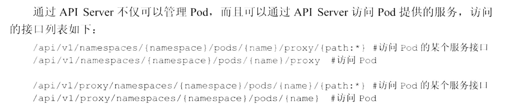 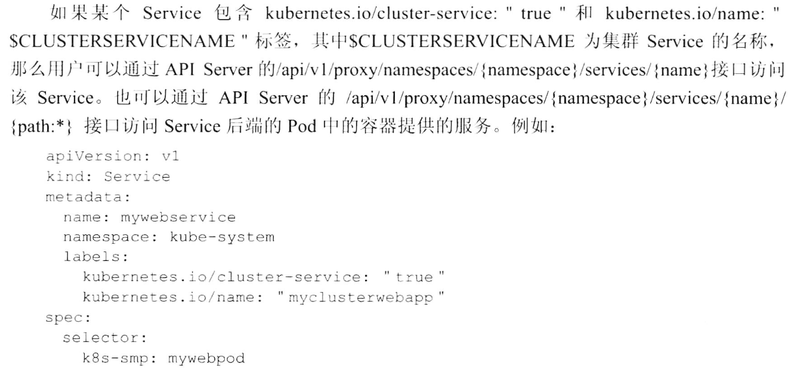 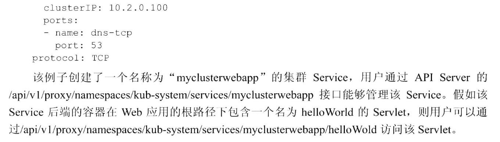
安全机制的原理
K8s通过一系列机制来实现集群的安全控制，其中包括API Server的认证授权、准入控制机制及保护敏感信息的Secret机制等。
Authentication认证
K8s对API调用使用CA（Client Authentication）、Token和HTTP Base方式实现用户认证。
CA认证方式
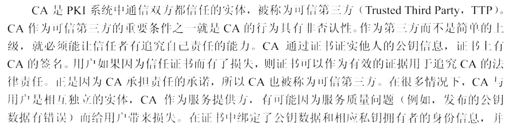 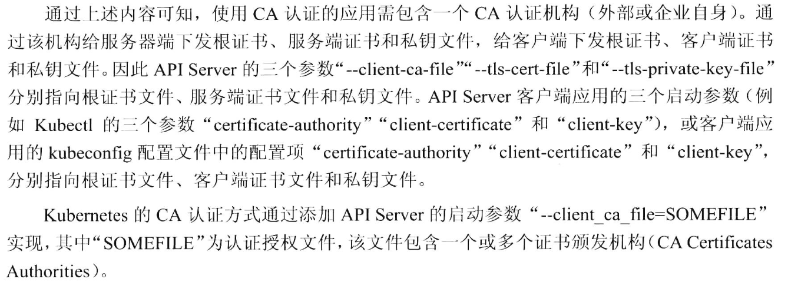
Token认证方式
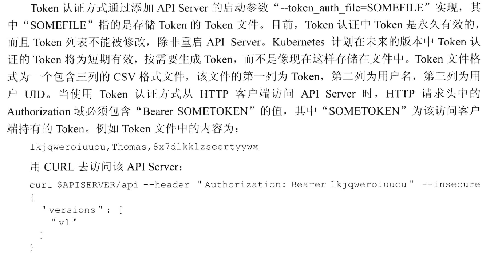
HTTP Base基本认证方式
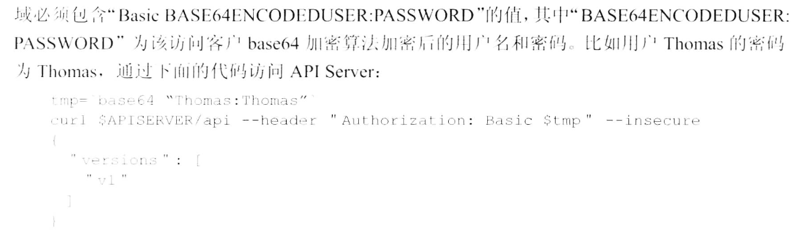
Authorization授权
在K8s中，授权（Authorization）是认证（Authentication）后的一个独立步骤。对所有请求API Server的HTTP请求再做限制。认证是允许连接，授权是有没有权限看。
授权流程不作用于只读请求（所有GET请求）。
授权流程通过访问策略比较请求上下文的属性（例如用户名、资源和Namespace）在通过API访问资源之前，必须通过访问策略进行校验。访问策略通过API Server的启动参数“--authorization_mode”配置，该参数包含如下三个值： 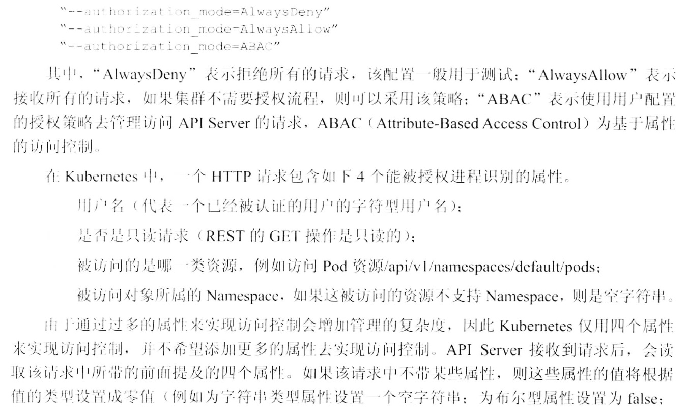 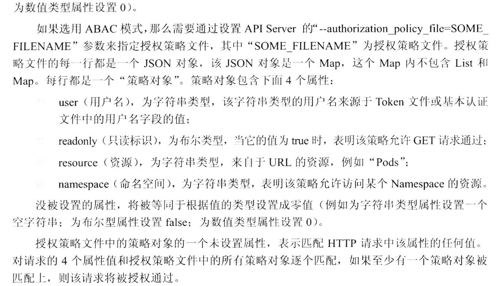 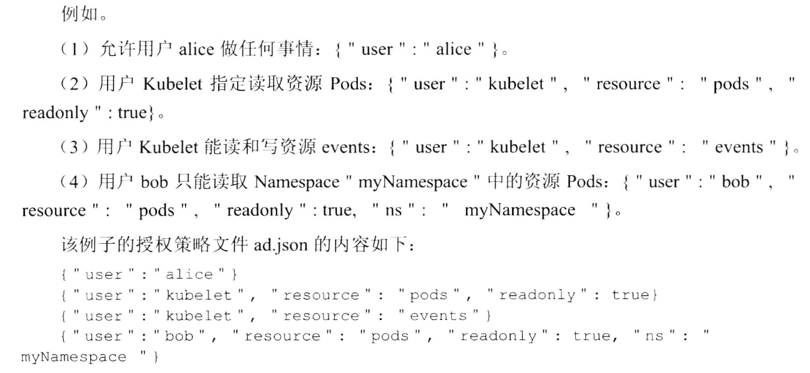
Admission Controller准入机制
Admission Controller是用于拦截所有经过认证和签权后的访问API Server请求的插件。这些插件在API Server进程内被调用。在请求被API Server接手前，每个Admission Controller插件按配置顺序被执行，如果其中任意一个插件拒绝该请求，就意味着这个请求被API Server拒绝，同时API Server反馈一个错误信息给请求发起方。
通过配置API Server的启动参数“admission_control”，在该参数中加入需要的Admission Control插件列表，各插件名称之间用逗号隔开。
/etc/kubernetes/apiserver
xxxxxxxxxx--admission-control=NamespaceLifecycle,NamespaceExists,LimitRanger,SecurityContextDeny,ServiceAccount,ResourceQuota 在某些情况下，Admission Control插件会使用系统配置的默认值去改变进入集群对象的内容。可以动态修改、增加插件，来控制资源的配额。
Admission Controller的插件列表如表所示：
| 名称 | 说明 |
|---|---|
| AlwaysAdmit | 允许所有请求通过 |
| AlwaysDeny | 拒绝所有请求，一般用于测试 |
| DenyExecOnPrivileged | 拦截所有带有SecurityContext属性的Pod的请求，拒绝在一个特权容器中执行命令。 |
| ServiceAccount | 配合Service Account Controller使用，为设定了Service Account的Pod自动管理Secret，使得Pod能够使用相应的Secret下载Image和访问API Server |
| SecurityContextDeny | 不允许带有SecurityContext属性的Pod存在，SecurityContext属性用于创建特权容器 |
| ResourceQuota | 在Namespace中做资源配额限制 |
| LimitRanger | 限制Namespace中的Pod和Container的CPU和内存配额 |
| NamespaceExists | 读取请求中的Namespace属性，如果该Namespace不存在，则拒绝该请求 |
| NamespaceAutoProvision（deprecated） | 读取请求中的Namespace属性，如果该Namespace不存在，则尝试创建该Namespace |
| NamespaceLifecycle | 该插件限制访问处于中止状态的Namepace，禁止在该Namespace中创建新的内容。当NamespaceLifecycle和NamespaceExists能够合并成一个插件后，NamespaceAutoProvision就会变成deprecated |
 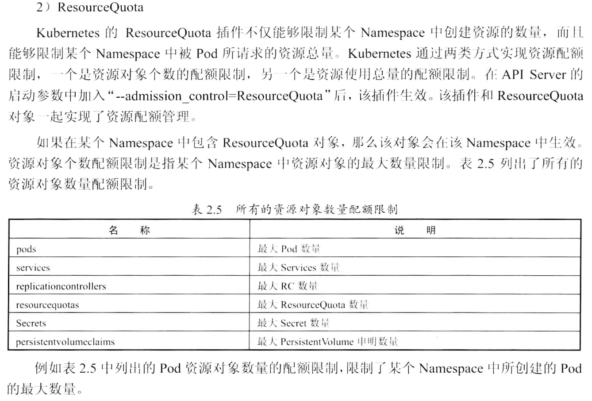
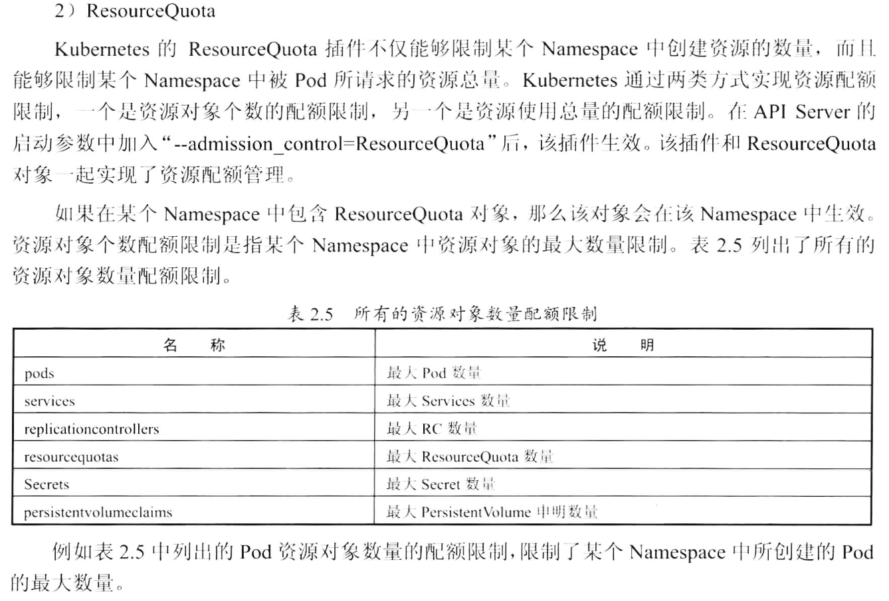
 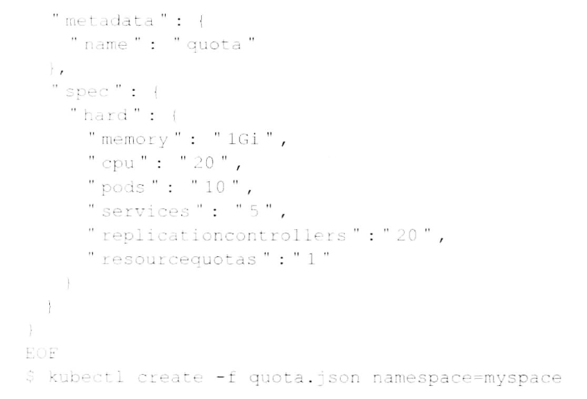
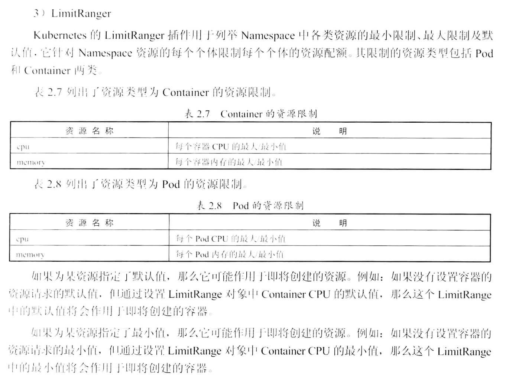
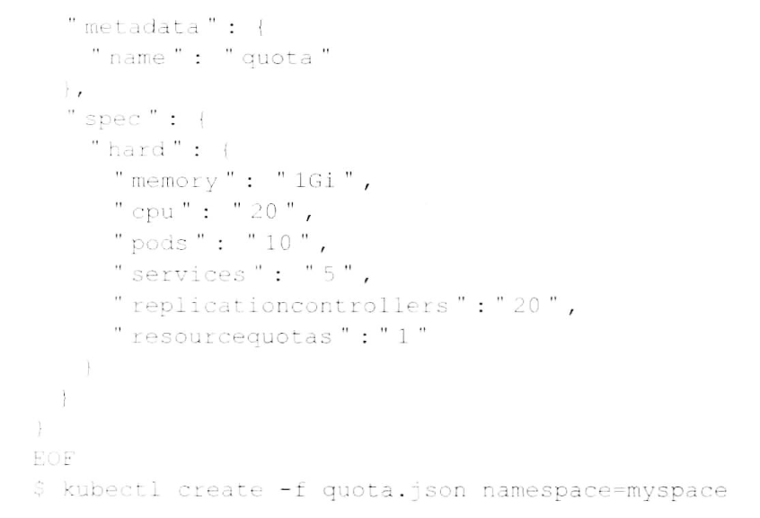
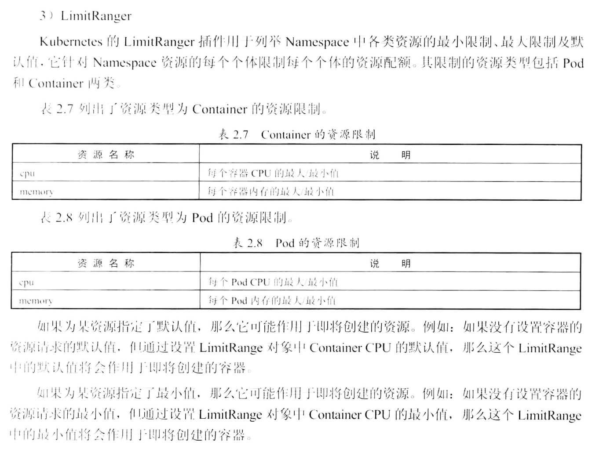
 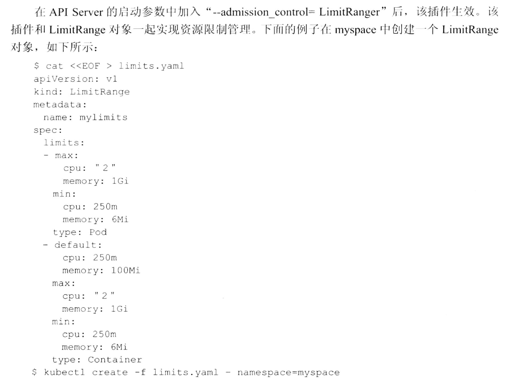
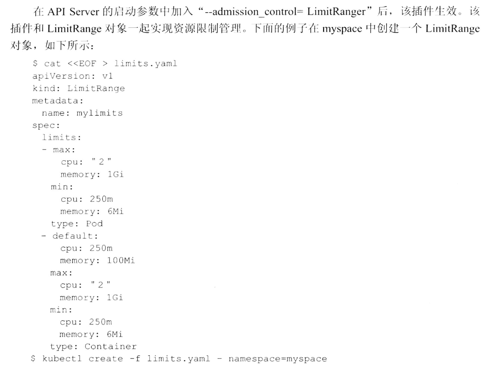
Secret私密凭据
Secret的重要作用是保管私密数据，比如密码、OAuth Tokens、SSH Keys等信息。将这些私密信息放在Secret对象中比直接放在Pod或Docker Image中更安全，也更便于使用。
Secret对象必须和Pod在同一个Namespace。
Secret包含三种类型：Opaque、ServiceAccount和Dockercfg。
使用Opaque的Secret
创建一个Secret：
xxxxxxxxxx$ kubectl namespace myspace$ cat <<EOF > secrets.yaml apiVersion: v1 kind: Secret metadata: name: mysecret type: Opaque data: password: dmFsdWUtMg0K username: dmFsdWUtMQ0K$ kubectl create -f secrets.yamldata域的各子域的值必须为base64编码值，其中password域和username域base64编码前的值分别为“value-1”和“value-2”。
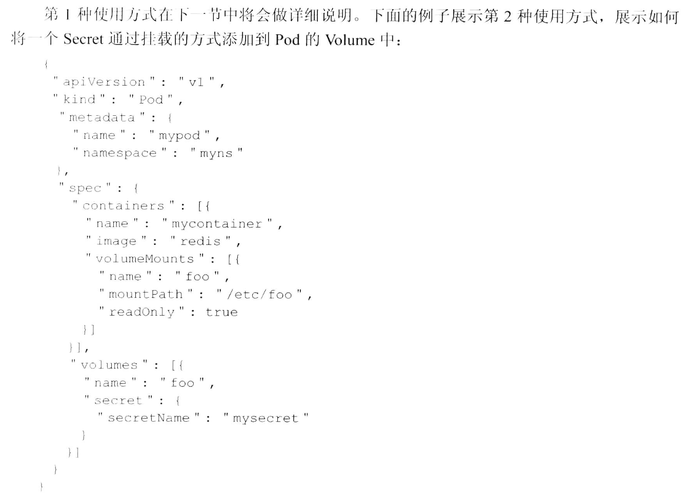

在使用Mount方式挂载Secret时，Container中Secret的“data”域的各个域的Key值作为目录中的文件，Value值被Base64编码后存储在相应的文件中。前面的例子中创建的Secret，被挂载到一个叫做mycontainer的Container中，在该Container中可通过相应的查询命令查看所生成的文件和文件的内容，如下所示：
xxxxxxxxxx$ ls /etc/foo/usernamepassword$ cat /etc/foo/usernamevalue-1$ cat /etc/foo/passwordvalue-2我操作例子：
xxxxxxxxxx[root@instance-xcul3 testsecret]# lspods.yaml secrets.yaml[root@instance-xcul3 testsecret]# vim secrets.yaml[root@instance-xcul3 testsecret]#apiVersion: v1kind: Secretmetadata: name: mysecrettype: Opaquedata: password: dmFsdWUtMg0K username: dmFsdWUtMQ0K[root@instance-xcul3 testsecret]# vim pods.yamlapiVersion: v1kind: Podmetadata: name: mypodspec: containers: - name: mycontainer image: kubeguide/redis-master volumeMounts: - name: foo mountPath: /etc/foo readOnly: true volumes: - name: foo secret: secretName: mysecret[root@instance-xcul3 testsecret]# kubectl create -f secrets.yamlsecret "mysecret" created[root@instance-xcul3 testsecret]# kubectl get secretsNAME TYPE DATA AGEmysecret Opaque 2 8s[root@instance-xcul3 testsecret]#[root@instance-xcul3 testsecret]# kubectl create -f pods.yamlpod "mypod" created[root@instance-xcul3 testsecret]# kubectl get podsNAME READY STATUS RESTARTS AGEmypod 0/1 ContainerCreating 0 5s[root@instance-xcul3 testsecret]# kubectl get podsNAME READY STATUS RESTARTS AGEmypod 1/1 Running 0 12s[root@instance-xcul3 testsecret]#[root@instance-xcul3 testsecret]# docker ps | grep mypod43bbdd5f7280 kubeguide/redis-master "redis-server /etc/re" 31 seconds ago Up 30 seconds k8s_mycontainer.af6301bf_mypod_default_6421ce93-42b7-11e7-bbaa-fa163f95f32d_42d0c978d5dc5e2764fe registry.access.redhat.com/rhel7/pod-infrastructure:latest "/pod" 41 seconds ago Up 39 seconds k8s_POD.ae8ee9ac_mypod_default_6421ce93-42b7-11e7-bbaa-fa163f95f32d_56def135[root@instance-xcul3 testsecret]# docker exec -ti 43bbdd5f7280 ls /etc/foo/password username[root@instance-xcul3 testsecret]# docker exec -ti 43bbdd5f7280 cat /etc/foo/usernamevalue-1[root@instance-xcul3 testsecret]# docker exec -ti 43bbdd5f7280 cat /etc/foo/passwordvalue-2[root@instance-xcul3 testsecret]#使用.dockercfg的Secret
登录后，输入要存进Secret的键值对。生成.dockercfg文件
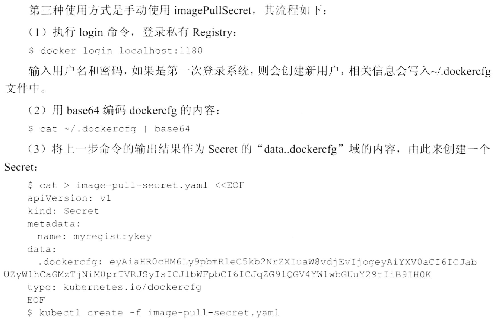
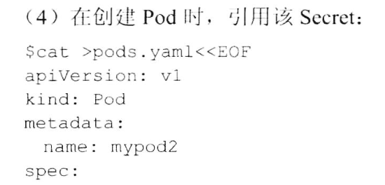
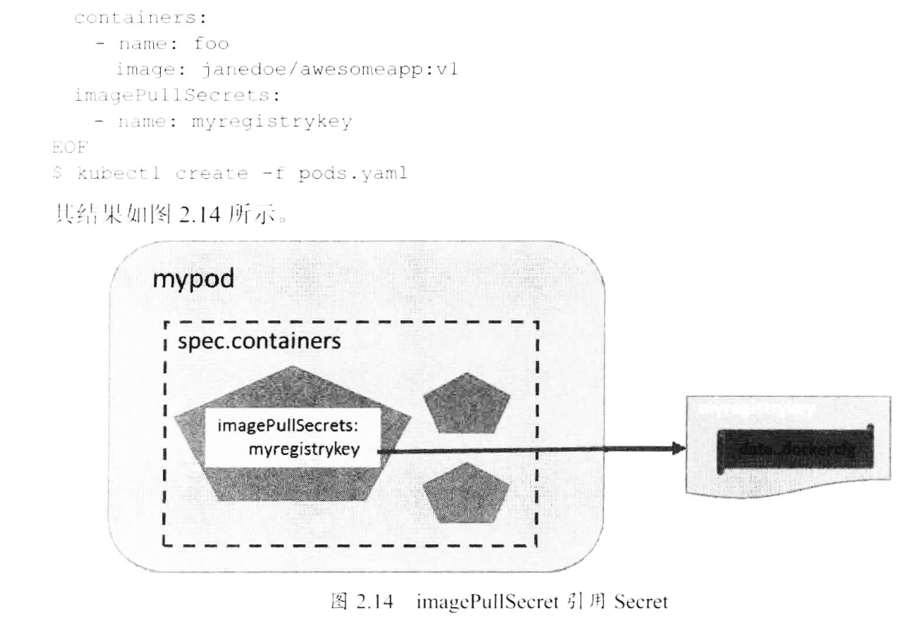
 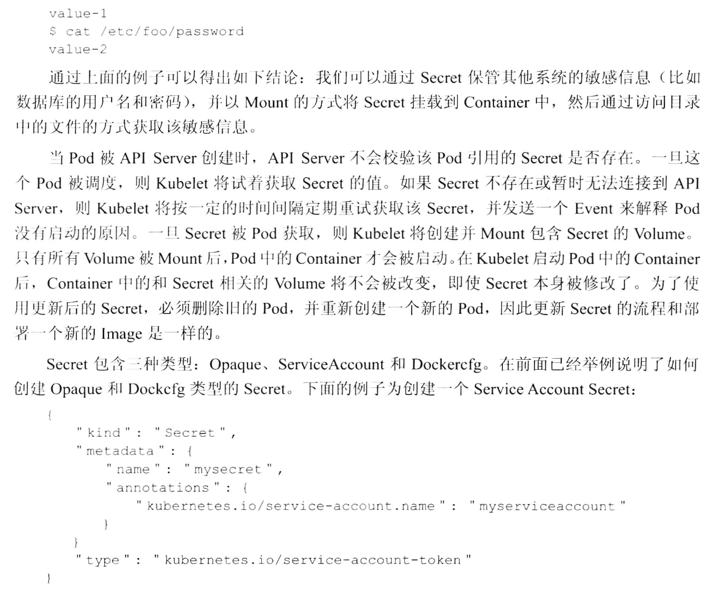
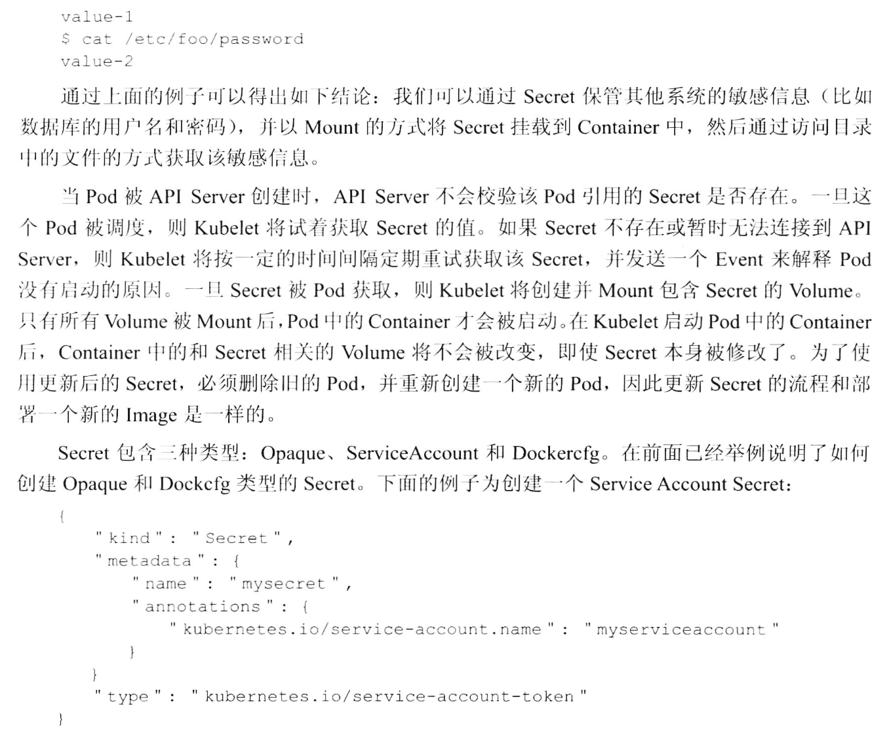
Pod创建时会验证所挂载的Secret是否真的指向一个Secret对象，因此Secret必须在任何引用它的Pod之前被创建。
每个单独的Secret大小不能超过1MB，K8s不鼓励创建大尺寸的Secret，大尺寸的Secret，则将大量占用API Server和Kubelet的内存。当然，创建许多小的Secret也能耗尽API Server和Kubelet的内存。
Kubelet目前只支持Pod使用由API Server创建的Secret。Pod必须由Kubectl创建请求创建Pod或Replication Controller创建。
通过上面的例子可以得出结论：我们可以通过Secret保管其他系统的敏感信息（比如数据库的用户名和密码），并以Mount的方式将Secret挂载到Container中，然后通过访问目录中的文件的方式获取该敏感信息。
当Pod被API Server创建时，API Server不会校验该Pod引用的Secret是否存在。一旦这个Pod被调度（通过上面三种方式使用），则Kubelet将试着获取Secret的值。如果Secret不存在或暂时无法连接到API Server，则Kubelet将按一定的时间间隔重试获取该Secret，并发送一个Event来解释Pod没有启动的原因。一旦Secret被Pod获取，则Kubelet将创建并Mount包含Secret的Volume。只有所有Volume被Mount后，Pod中的Container才会被启动。在Kubelet启动Pod中的Container后，Container中的和Secret相关的Volume将不会被改变，即使Secret本身被修改了。为了使用更新后的Secret，必须删除旧的Pod，并重新创建一个新的Pod，因此更新Secret的流程和部署一个新的Image是一样的。
使用Service Account的Secret
在创建Pod时，通过为Pod指定Service Account来自动使用该Secret。
Service Account是多个Secret的集合。包含两类Secret：
- 一类为普通Secret，用于访问API Server，也被称为Service Account Secret；
- 另一类为imagePullSecret，用于下载容器镜像。
如果镜像库运行在Insecure模式下，则该Service Account可以不包含imagePullSecret。
下面例子创建了一个名为build-robot的Service Account，并查询该Service Account的信息：
xxxxxxxxxx$cat > serviceaccount.json <<EOF{ "kind": "ServiceAccount", "apiVersion": "v1", "metadata": { "name": "myserviceaccount" }, "secrets": [ { "kind": "Secret", "name": "mysecret", "apiVersion": "v1" }, { "kind": "Secret", "name": "mysecret1", "apiVersion": "v1" }, ], "imagePullSecrets": [ { "name": "mysecrets2" } ]}EOF$ kubectl create -f serviceaccount.json$ kubectl get serviceaccounts build-robot -o json该Service Account包含了对两类Secret的引用：一类用于下载Image，一类用于访问API Server。
通过下列命令可以查看Namespace中的Service Account列表：
xxxxxxxxxxkubectl get serviceAccountsPod和Service Account是如何建立关系呢？
如果在创建Pod时没有为Pod指定Service Account，则系统会自动为其指定一个在同一命名空间（Namespace）下的名为“default”的Service Account。如果想要为Pod指定其他Service Account，则可以在Pod的创建过程中指定“spec.serviceAccountName”的 值为相应的Service Account的名称。如下所示：
xxxxxxxxxxapiVersionv1kindPodmetadata namemypodspec containersnamemycontainer imagenginxv1 serviceAccountNamemyserviceaccount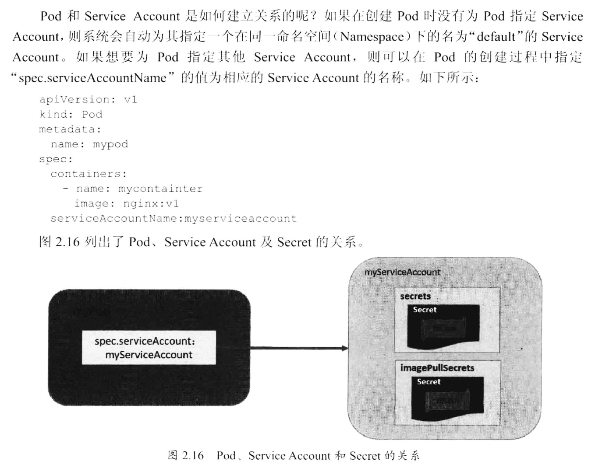 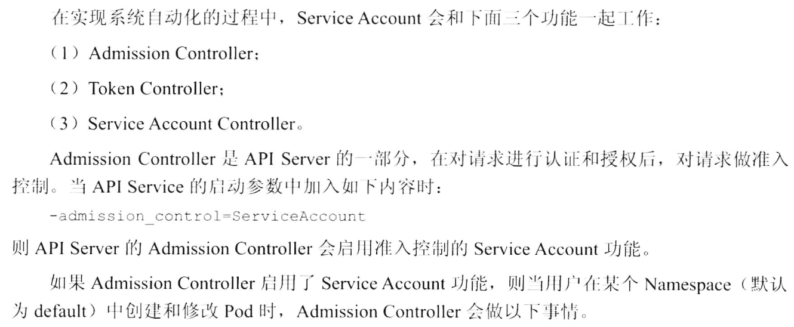
如果Admission Controller启动了Service Account功能，则当用户在某个Namespace（默认为default）中创建和修改Pod时，Admission Controller会作如下事情：
- 如果spec.serviceAccount域没有被设置，则K8s默认为其指定名称为default的Service Account；
- 如果创建和修改Pod时spec.serviceAccount域指定了default以外的Service Account，则该Service Account没有事先被创建，则该Pod操作失败；
- 如果在Pod中没有指定“ImagePullSecrets”，那么这个spec.serviceAccount域指定的Service Account的“ImagePullSecrets”会被加入到该Pod中；
- 添加一个“volume”给Pod，在该“volume”中包含一个能访问API Server的Token（该Token来自Service Account Secret）；
- 通过添加“volumeSource”的方式，将上面提到的“volume”挂载到Pod中所有容器的/var/run/secrets/kubernetes.io/serviceaccount目录中。
关于Token Controller和Service AccountController在该自动化过程中所起到的作用在各自部分会讲到。
Kubectl Proxy进程
考虑到安全策略，访问K8s的Master，必须基于TOKEN文件或客户端证书及HTTP Base认证，K8s提供了一个代理程序——Kubectl Proxy，它既能作为Kubernetes API Server的返回代理，也能作为普通客户端访问API Server的代理。
假如在Master节点上使用8080端口来启动该代理程序，则可以运行下面命令：
xxxxxxxxxxkubectl proxy --port=8080 &验证代理是否正常工作，可以通过访问该代理的“Versions” REST接口进行测试：
xxxxxxxxxx$ curl http://loalhost:8080/api/ \{ \ "versions" : [ "v1" \ ] \}作为API Server的反向代理，可以通过它开发或限制对外暴露的功能。作为客户端访问API Server的普通代理，认证部分完全可以交由它去处理。
Controller Manager（kube-controller-manager）进程
Controller Manager作为集群内部的管理控制中心，负责集群内的Node、Pod副本、服务端点（Endpoint）、命名空间（Namespace）、服务账号（ServiceAccount）、资源定额（ResourceQuota）等的管理并执行自动化修复流程，确保集群处于预期的工作状态。比如在出现某个Node意外宕机时，Controller Manager会在集群的其它节点上自动补齐Pod副本。 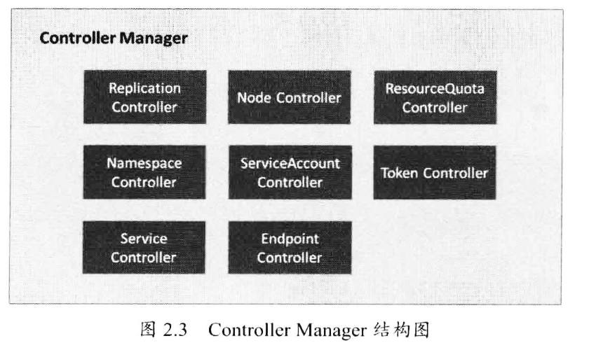
如图所示，Controller Manager内部包含Replication Controller、Node Controller、ResourceQuota Controller、Namespace Controller、ServiceAccount Controller、Token Controller、Service Controller及Endpoint Controller等多个控制器，Controller Manager是这些控制器的核心管理者。一般来说，智能系统和自动系统通常会通过一个操纵系统来不断修正系统的状态。在K8s集群中，每个Controller就是一个操纵系统，它通过API Server监控系统的共享内存，并尝试着将系统状态从“现有状态”修正到“期望状态”。
在K8s集群中与Controller Manager并重的另一个组件是Kubernetes Scheduler，它的作用是将待调度的Pod（包括通过API Server新创建的Pod及RC为补足副本而创建的Pod等）通过一些复杂的调度流程绑定到某个合适的Node上，下节讲Kubernetes Scheduler调度器的基本原理。
Replication Controller
为了区分Controller Manager中的Replication Controller（副本控制器）和资源对象Replication Controller，我们将资源对象Replication Controller简写为RC，而本节中的Replication Controller是指“副本控制器”，以便于后续讨论。
Replication Controller的核心作用是确保在任何时候集群中一个RC锁关联的Pod都保持一定数量的Pod副本处于正常运行状态。如果该类Pod的Pod副本数量太多，则Replication Controller会销毁一些Pod副本；反之Replication Controller会添加Pod副本，直到该类Pod的Pod副本数量达到预设的副本数量。最好不要越过RC直接创建Pod，因为Replication Controller会通过RC管理Pod副本，实现自动创建、补足、替换、删除Pod副本，这样就能提高系统的容灾能力，减少由于节点崩溃等意外状况造成的损失。即使你的应用程序只用到一个Pod副本，我们也强烈建议使用RC来定义Pod。
Service可能由被不同RC管理的多个Pod副本组成，在Service的整个生命周期里，由于需要发布不同版本的Pod，因此希望不断有旧的RC被销毁，新的RC被创建。Service自身及它的客户端应用不需要关注RC。
Replication Controller管理的对象是Pod，因此其操作和Pod的状态及重启策略息息相关。Pod的状态值列表如下：
Pod的状态值列表
| 状态值 | 描述 |
|---|---|
| pending | API Server已经创建该Pod，但Pod内还有一个或多个容器的镜像没有创建 |
| running | Pod内所有容器均已创建，且至少有一个容器处于运行状态或正在启动或重启 |
| succeeded | Pod内所有容器均成功中止，且不会再重启 |
| failed | Pod内所有容器均已退出，且至少有一个容器因为发生错误而退出 |
Pod的重启策略包含：Always、OnFailure和Never。当Pod的重启策略RestartPolicy=Always时，Replication Controller才会管理该Pod的操作（例如创建、销毁、重启等）。
在通常情况下，Pod对象被成功创建后不会消失，除了用户或Replication Controller会销毁Pod对象。唯一的例外是当Pod处于succeeded或failed状态的时间过长（超时参数由系统设定）时，该Pod会被系统自动回收。当Pod副本变成failed状态或被删除，且其重启策略RestartPolicy=Always时，管理该Pod的副本控制器将在其他工作节点上重新创建、运行该Pod副本。
为了理解Replication Controller的机制，我们需要先进一步理解RC。被RC管控的所有Pod实例都是通过RC里定义的Pod模板（Template）创建的，该模板包含Pod的标签属性，同时RC里包含一个标签选择器（Label Selector），Selector的值表明了该RC所关联的Pod。RC会保证每个由它创建的Pod都包含与它的标签选择器相匹配的label。通过这种标签选择器技术，K8s实现了一种简单地过滤、选择资源对象的机制，并且这个机制被K8s大量使用。另外，通过RC创建的Pod副本在初始阶段状态是一致的，从某种意义上讲是可以完全互相替换的。这种特性非常适合副本无状态服务，当然，RC同样可以用于构建有状态的服务。 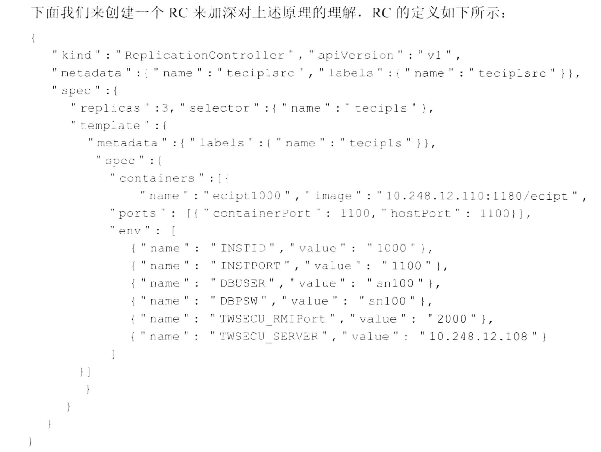
这个RC创建了一个包含一个容器的Pod——tecipls，该Pod包含了3个副本。
关于Pod和Pod模板区别，模板就像一个模具，模具制作出来的东西一旦离开磨具，它们之间就再也没关系。同样，一旦Pod被创建完毕，无论模板如何变化，甚至换成一个新的模板，也不会影响到已经创建的Pod。
此外，Pod可以通过修改它的标签来实现脱离RC的管控。该方法可以用于将Pod从集群中迁移、数据修复等调试。对于被迁移的Pod副本，RC会自动创建一个新的副本替换被迁移的副本。需要注意的是，删除一个RC不会影响它所创建的Pod。如果想删除一个RC所控制的Pod，则需要将该RC的副本数（Replicas）属性设置为0，这样所有的Pod副本都会被自动删除。
理解了RC的作用，我们就容易理解Replication Controller了，它的职责有：
确保当前集群中有且仅有N个Pod实例，N是RC中定义的Pod副本数量。
通过调整RC的spec.replicas属性值来调整Pod的副本数量。
副本控制器（Replication Controller）的常用使用模式：
（1）重新调度（Rescheduling）。不管你想运行1个副本还是1000个副本，副本控制器都能确保指定数量的副本存在于集群中，即使发生节点故障或Pod副本被终止运行等意外状况。
（2）弹性伸缩（Scaling）。手动或者通过自动扩容代理 修改副本控制器的spec.replicas属性值，非常容易实现扩大或缩小副本的数量。例如，通过下列命令可以实现手动修改名为foo的RC的副本数为3：
xxxxxxxxxxkubectl scale --replicas=3 replicationcontrollers foo（3）滚动更新（Rolling Updates）。副本控制器被设计成通过逐个替换Pod的方式来辅助服务的滚动更新。推荐的方式是创建一个新的只有一个副本的RC，若新的RC副本数量加1，则旧的RC的副本数量减1，直到逐个旧的RC的副本数量为零，然后删除该旧的RC。
我们现在来看一个例子，看一下kubectl rolling-update是如何对service下的Pods进行滚动更新的。我们的kubernetes集群有两个版本的 Nginx ：
xxxxxxxxxx# docker images|grep nginxnginx 1.11.9 cc1b61406712 2 weeks ago 181.8 MBnginx 1.10.1 bf2b4c2d7bf5 4 months ago 180.7 MB在例子中我们将Service的Pod从nginx 1.10.1版本滚动升级到1.11.9版本。
我们的rc-demo-v0.1.yaml文件内容如下：
xxxxxxxxxxapiVersionv1kindReplicationControllermetadata namerc-demo-nginx-v0.1spec replicas4 selector apprc-demo-nginx verv0.1 template metadata labels apprc-demo-nginx verv0.1 spec containersnamerc-demo-nginx imagenginx1.10.1 portscontainerPort80 protocolTCP envnameRC_DEMO_VER valuev0.1创建这个replication controller：
x# kubectl create -f rc-demo-v0.1.yamlreplicationcontroller "rc-demo-nginx-v0.1" created# kubectl get pods -o wideNAME READY STATUS RESTARTS AGE IP NODErc-demo-nginx-v0.1-2p7v0 1/1 Running 0 1m 172.30.192.9 iz2ze39jeyizepdxhwqci6zrc-demo-nginx-v0.1-9pk3t 1/1 Running 0 1m 172.30.192.8 iz2ze39jeyizepdxhwqci6zrc-demo-nginx-v0.1-hm6b9 1/1 Running 0 1m 172.30.0.9 iz25beglnhtzrc-demo-nginx-v0.1-vbxpl 1/1 Running 0 1m 172.30.0.10 iz25beglnhtzService manifest文件rc-demo-svc.yaml的内容如下：
xxxxxxxxxxapiVersionv1kindServicemetadata namerc-demo-svcspec portsport80 protocolTCP selector apprc-demo-nginx创建这个service：
xxxxxxxxxx# kubectl create -f rc-demo-svc.yamlservice "rc-demo-svc" created# kubectl describe svc/rc-demo-svcName: rc-demo-svcNamespace: defaultLabels: <none>Selector: app=rc-demo-nginxType: ClusterIPIP: 10.96.172.246Port: <unset> 80/TCPEndpoints: 172.30.0.10:80,172.30.0.9:80,172.30.192.8:80 + 1 more...Session Affinity: NoneNo events. 可以看到之前replication controller创建的4个Pod都被置于rc-demo-svc这个service的下面了，我们来访问一下该服务：
xxxxxxxxxx# curl -I http://10.96.172.246:80HTTP/1.1 200 OKServer: nginx/1.10.1Date: Wed, 08 Feb 2017 08:45:19 GMTContent-Type: text/htmlContent-Length: 612Last-Modified: Tue, 31 May 2016 14:17:02 GMTConnection: keep-aliveETag: "574d9cde-264"Accept-Ranges: bytes# kubectl exec rc-demo-nginx-v0.1-2p7v0 env... ...RC_DEMO_VER=v0.1... ... 通过Response Header中的Server字段，我们可以看到当前Service pods中的nginx版本为1.10.1；通过打印Pod中环境变量，得到RC_DEMO_VER=v0.1。
接下来，我们来rolling-update rc-demo-nginx-v0.1这个rc，我们的新rc manifest文件rc-demo-v0.2.yaml内容如下：
xxxxxxxxxxapiVersionv1kindReplicationControllermetadata namerc-demo-nginx-v0.2spec replicas4 selector apprc-demo-nginx verv0.2 template metadata labels apprc-demo-nginx verv0.2 spec containersnamerc-demo-nginx imagenginx1.11.9 portscontainerPort80 protocolTCP envnameRC_DEMO_VER valuev0.2rc-demo-new.yaml与rc-demo-old.yaml有几点不同：rc的name、image的版本以及RC_DEMO_VER这个环境变量的值：
xxxxxxxxxx# diff rc-demo-v0.2.yaml rc-demo-v0.1.yaml4c4< name: rc-demo-nginx-v0.2---> name: rc-demo-nginx-v0.19c9< ver: v0.2---> ver: v0.114c14< ver: v0.2---> ver: v0.118c18< image: nginx:1.11.9---> image: nginx:1.10.124c24< value: v0.2---> value: v0.1 我们开始rolling-update，为了便于跟踪update过程，这里将update-period设为10s，即每隔10s更新一个Pod：
xxxxxxxxxx# kubectl rolling-update rc-demo-nginx-v0.1 --update-period=10s -f rc-demo-v0.2.yamlCreated rc-demo-nginx-v0.2Scaling up rc-demo-nginx-v0.2 from 0 to 4, scaling down rc-demo-nginx-v0.1 from 4 to 0 (keep 4 pods available, don't exceed 5 pods)Scaling rc-demo-nginx-v0.2 up to 1Scaling rc-demo-nginx-v0.1 down to 3Scaling rc-demo-nginx-v0.2 up to 2Scaling rc-demo-nginx-v0.1 down to 2Scaling rc-demo-nginx-v0.2 up to 3Scaling rc-demo-nginx-v0.1 down to 1Scaling rc-demo-nginx-v0.2 up to 4Scaling rc-demo-nginx-v0.1 down to 0Update succeeded. Deleting rc-demo-nginx-v0.1replicationcontroller "rc-demo-nginx-v0.1" rolling updated to "rc-demo-nginx-v0.2"从日志可以看出：kubectl rolling-update逐渐增加 rc-demo-nginx-v0.2的scale并同时逐渐减小 rc-demo-nginx-v0.1的scale值直至减到0。
在升级过程中，我们不断访问rc-demo-svc，可以看到新旧Pod版本共存的状态，服务并未中断：
xxxxxxxxxx# curl -I http://10.96.172.246:80HTTP/1.1 200 OKServer: nginx/1.10.1... ...# curl -I http://10.96.172.246:80HTTP/1.1 200 OKServer: nginx/1.11.9... ...# curl -I http://10.96.172.246:80HTTP/1.1 200 OKServer: nginx/1.10.1... ...更新后的一些状态信息：
xxxxxxxxxx# kubectl get rcNAME DESIRED CURRENT READY AGErc-demo-nginx-v0.2 4 4 4 5m# kubectl get podsNAME READY STATUS RESTARTS AGErc-demo-nginx-v0.2-25b15 1/1 Running 0 5mrc-demo-nginx-v0.2-3jlpk 1/1 Running 0 5mrc-demo-nginx-v0.2-lcnf9 1/1 Running 0 6mrc-demo-nginx-v0.2-s7pkc 1/1 Running 0 5m# kubectl exec rc-demo-nginx-v0.2-25b15 env... ...RC_DEMO_VER=v0.2... ...官方文档说kubectl rolling-update是由client side实现的rolling-update，这是因为roll-update的逻辑都是由kubectl发出N条命令到APIServer完成的。
通过上述模式，即使在滚动更新的过程中发生了不可预料的错误，Pod集群的更新也都在可控范围内。在理想情况下，滚动更新控制器需要将准备就绪的应用考虑在内，并保证在集群中任何时刻都有足够数量的可用Pod。下面是手动调用滚动更新的例子代码：
xxxxxxxxxxkubectl rolling-update frontend-v1 -f frontend-v2.json 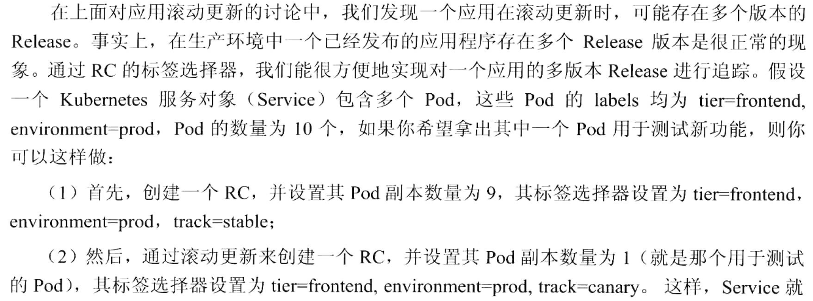
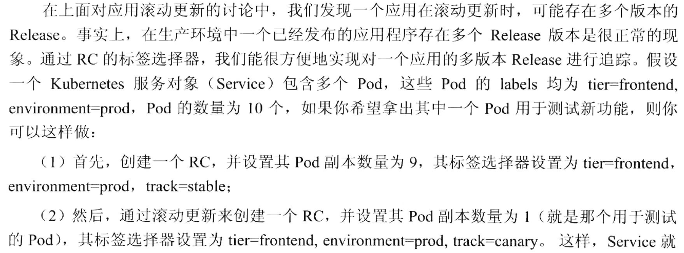
Node Controller
Node Controller负责发现、管理和监控集群中的各个Node节点，Kubelet在启动时通过API Server注册节点信息，并定时向API Server发送节点信息。API Server接收到这些信息后，将这些信息写入etcd。写入etcd的节点信息包括节点健康状况、节点资源、节点名称、节点地址信息、操作系统版本、Docker版本、Kubelet版本等。
节点健康状况包括状态：就绪（True）、未就绪（False）和未知（Unknown）。
下面列举节点信息的内容：
xxxxxxxxxx[root@instance-xcul3 ~]# kubectl get nodesNAME STATUS AGE127.0.0.1 Ready 5d[root@instance-xcul3 ~]# kubectl describe node 127.0.0.1Name: 127.0.0.1Role:Labels: beta.kubernetes.io/arch=amd64 beta.kubernetes.io/os=linux kubernetes.io/hostname=127.0.0.1Taints: <none>CreationTimestamp: Tue, 16 May 2017 18:22:08 +0800Phase:Conditions: Type Status LastHeartbeatTime LastTransitionTime Reason Message ---- ------ ----------------- ------------------ ------ ------- OutOfDisk False Mon, 22 May 2017 10:37:11 +0800 Tue, 16 May 2017 18:22:08 +0800 KubeletHasSufficientDisk kubelet has sufficient disk space available MemoryPressure False Mon, 22 May 2017 10:37:11 +0800 Tue, 16 May 2017 18:22:08 +0800 KubeletHasSufficientMemory kubelet has sufficient memory available DiskPressure False Mon, 22 May 2017 10:37:11 +0800 Tue, 16 May 2017 18:22:08 +0800 KubeletHasNoDiskPressure kubelet has no disk pressure Ready True Mon, 22 May 2017 10:37:11 +0800 Tue, 16 May 2017 18:22:08 +0800 KubeletReady kubelet is posting ready statusAddresses: 127.0.0.1,127.0.0.1,127.0.0.1Capacity: alpha.kubernetes.io/nvidia-gpu: 0 cpu: 8 memory: 16432864Ki pods: 110Allocatable: alpha.kubernetes.io/nvidia-gpu: 0 cpu: 8 memory: 16432864Ki pods: 110System Info: Machine ID: 40fde99a85e14fb2a4b33b8714fc4110 System UUID: 40FDE99A-85E1-4FB2-A4B3-3B8714FC4110 Boot ID: 69f3ce25-487a-4420-a0a1-abca8921e742 Kernel Version: 3.10.0-327.el7.x86_64 OS Image: CentOS Linux 7 (Core) Operating System: linux Architecture: amd64 Container Runtime Version: docker://1.12.6 Kubelet Version: v1.5.2 Kube-Proxy Version: v1.5.2ExternalID: 127.0.0.1Non-terminated Pods: (8 in total) Namespace Name CPU Requests CPU Limits Memory Requests Memory Limits --------- ---- ------------ ---------- --------------- ------------- default frontend-2p8mk 0 (0%) 0 (0%) 0 (0%) 0 (0%) default frontend-55s75 0 (0%) 0 (0%) 0 (0%) 0 (0%) default frontend-j5xv6 0 (0%) 0 (0%) 0 (0%) 0 (0%) default redis-master-lf3tb 0 (0%) 0 (0%) 0 (0%) 0 (0%) default redis-slave-2006m 0 (0%) 0 (0%) 0 (0%) 0 (0%) default redis-slave-cclvr 0 (0%) 0 (0%) 0 (0%) 0 (0%) default redis-slave-l3qt5 0 (0%) 0 (0%) 0 (0%) 0 (0%) development busybox 0 (0%) 0 (0%) 0 (0%) 0 (0%)Allocated resources: (Total limits may be over 100 percent, i.e., overcommitted. CPU Requests CPU Limits Memory Requests Memory Limits ------------ ---------- --------------- ------------- 0 (0%) 0 (0%) 0 (0%) 0 (0%)No events.[root@instance-xcul3 ~]#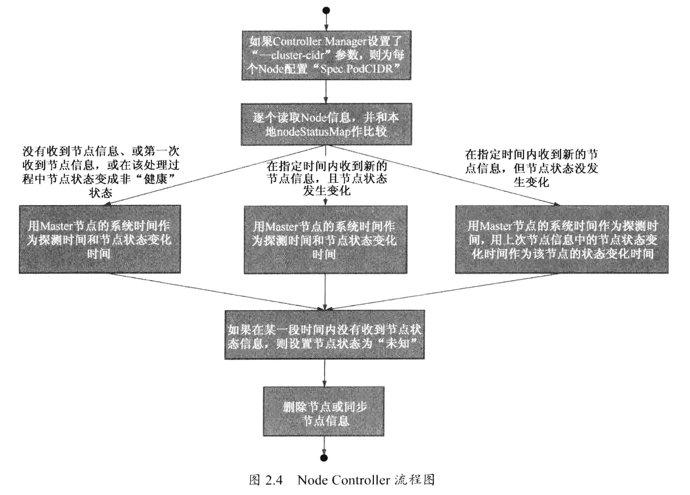
如图所示，Node Controller通过API Server定期读取这些信息，然后做如下处理。
- Controller Manager在启动时如果设置了--cluster-cidr参数，那么为每个没有设置Spec.PodCIDR的Node节点生成一个CIDR地址，并用该CIDR地址设置节点的Spec.PodCIDR属性，这样做的目的是防止不同节点的CIDR地址发生冲突。
- 逐个读取节点信息，多次尝试修改nodeStatusMap中的节点状态信息，将该节点信息和Node Controller的nodeStatusMap中保存的节点信息作比较。如果判断出没有收到kubelet发送的节点信息、第一次收到节点kubelet发送的节点信息，或在该处理过程中节点状态变成非“健康”状态，则在nodeStatusMap中保存该节点的状态信息，并用Node Controler所在节点的系统时间作为探测时间和节点状态变化时间。如果判断出指定时间内收到新的节点信息，且节点状态发生变化，则在nodeStatusMap中保存该节点的状态信息，并用Node Controler所在节点的系统时间作为探测时间和节点状态变化时间。如果判断出在指定时间内收到新的节点信息，但节点状态没有发生变化，则在nodeStatusMap中保存该节点的状态信息，并用Node Controller所在节点的系统时间作为探测时间，用上次节点信息中的节点状态变化时间作为该节点的状态变化时间。如果判断出在某一段时间内没有收到节点状态信息，则设置节点状态为“未知”（Unknown），并且通过API Server保存节点状态。
- 逐个读取节点信息。如果节点状态变为非“就绪”状态，则将节点加入待删除队列，否则将节点处从该队列中删除。如果节点状态为非“就绪”状态，且系统指定了Cloud Provider，则Node Controller调用Cloud Provider查看节点，若发现节点故障，则删除etcd中的节点信息，并删除和该节点相关的Pod等资源的信息。
ResourceQuota Controller
作为容器集群的管理平台，K8s也提供了资源配额管理（ResourceQuota Controller）这一高级功能，资源配额管理确保了指定的对象在任何时候都不会超量占用系统资源，避免了由于某些业务进程的设计或实现的缺陷导致系统运行凌乱甚至以外宕机，对整个集群的平稳运行和稳定性有非常重要的作用。
用户通过API Server请求创建或修改资源，API Server会调用Admission Controller的ResourceQuota插件，该插件灰度去前面写入etcd的配额统计结果，如果某向资源的配额已经被使用完，则此请求会被拒绝。
目前K8s支持如下三个层次的资源配额管理。
- 容器级别，可以对CPU和Memory进行限制。
- Pod级别，可以对一个Pod内所有容器的可用资源进行限制。
- Namespace级别，为Namespace（可以用于多租户）级别的资源限制，包括：
- Pod数量
- Replication Controller数量
- Service数量
- ResourceQuota数量
- Secret数量
- 可持有的PV（Persistent Volume）数量。 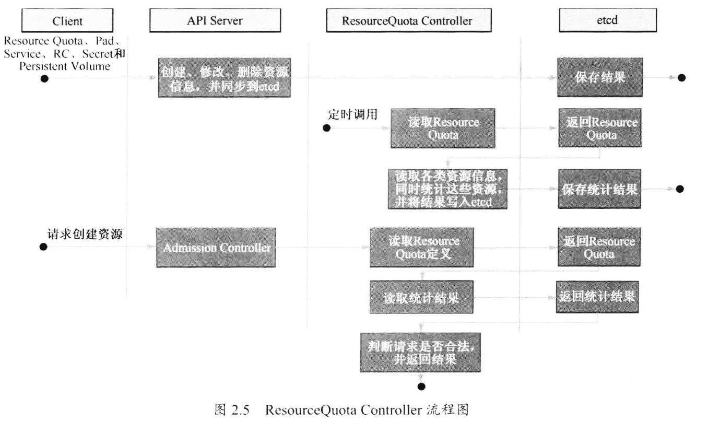
ResourceQuota Controller负责实现K8s的资源配额管理，如图所示。用户通过API Server为Namespace维护ResourceQuota对象，API Server将该对象保存到etcd中。所有Pod、Service、RC、Secret和Persistent Volume资源对象的实时状态通过API Server保存到etcd中。ResourceQuota Controller在计算资源使用总量时会用到这些信息。
ResourceQuota Controller以Namespace作为分组统计单元，通过API Server定时读取etcd中每个Namespace里定义的ResourceQuota信息，集群Pod、Service、RC、Secret和Persistent Volume等资源对象的总数，以及所有Container实例所使用的资源量（目前包括CPU和内存），然后将这些统计信息写入etcd的resourceQuotaStatusStorage目录（resourceQuotas/status）中。写入resourceQuotaStorage的内容包括Resource名称、配额值（ResourceQuota对象中spec.hard域下包含的资源的值）、当前使用值（ResourceQuota Controller统计出来的值）。
API Server启动插件
/etc/kubernetes/apiserver
xxxxxxxxxx--admission-control=NamespaceLifecycle,NamespaceExists,LimitRanger,SecurityContextDeny,ServiceAccount,ResourceQuotaNamespace Controller
用户通过API Server可以创建新的Namespace并保存在etcd中。Namespace Controller定时通过API Server读取这些Namespace信息。如果Namespace被API标识为优雅删除（设置删除期限，DeletionTimestamp属性被设置），则将该Namespace的状态设置成“Terminating”并保存到etcd中。同时Namespace Controller删除该Namespace下的ServiceAccount、RC、Pod、Secret、PersistentVolume、ListRange、ResourceQuota和Event等资源对象。
当Namespace的状态被设置成“Terminating”后，由Adminssion Controller的NamespaceLifecycle插件来阻止为该Namespace创建新的资源。同时，在Namespace Controller删除完该Namespace中的所有资源对象后，Namespace Controller对该Namespace执行finalize操作，删除Namespace的spec.finalizers域中的信息。
API Server启动参数
/etc/kubernetes/apiserver
xxxxxxxxxx--admission-control=NamespaceLifecycle,NamespaceExists,LimitRanger,SecurityContextDeny,ServiceAccount,ResourceQuota如果Namespace Controller观察到Namespace设置了删除期限（即DeletionTimestam属性被设置），同时Namespace的spec.finalizers域值是空的，那么Namespce Controller将通过API Server删除该Namespace资源。
ServiceAccount Controller与Token Controller
ServiceAccount Controller与Token Controller是与安全相关的两个控制器。ServiceAccount Controller在Controller Manager启动时被创建。它监听Service Account的删除事件和Namespace的创建、修改事件。如果在该Service Account的Namespace中没有default Service Account，那么ServiceAccount Controller为该Service Account的Namespace创建一个default Service Account。
我们在API Server的启动参数中添加“--admission_control=ServiceAccount”后，API Server在启动时会自己创建一个key和crt（见/var/run/kubernetes/apiserver.crt和apiserver.key），然后在启动./kube-controller-manager时添加参数service_account_private_key_file=/var/run/kubernetes/apiserver.key，这样启动K8s Master后，我们就会发现在创建Service Account系统会自动为其创建一个Secret。 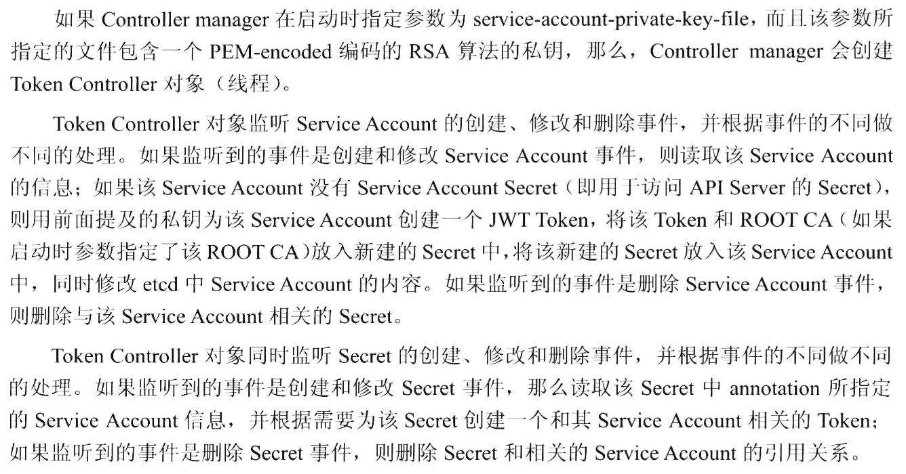
Service Controller与Endpoint Controller
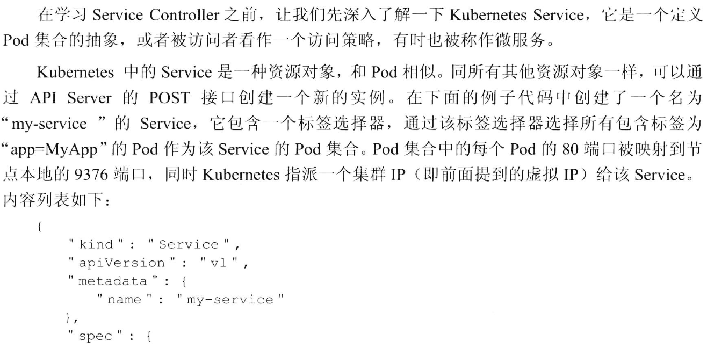
 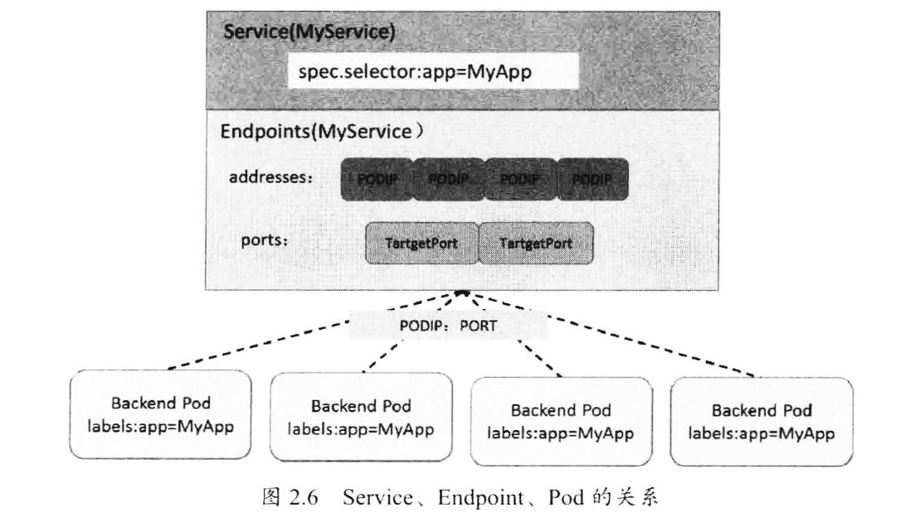
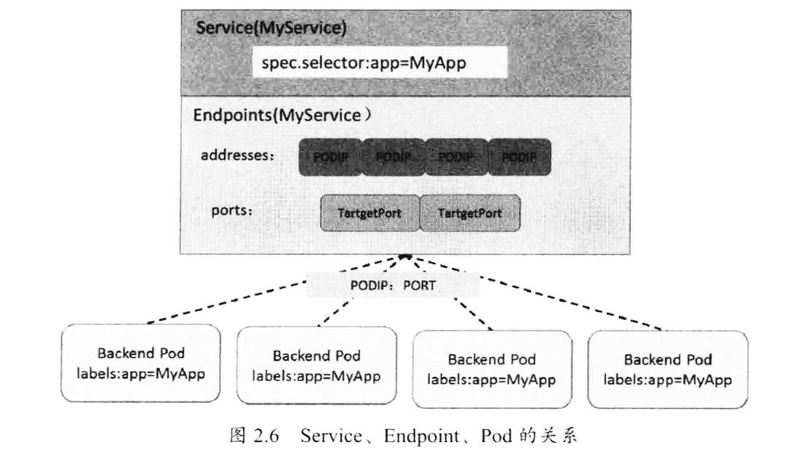
如图列出了Service是如何访问到后端的Pod的。在创建Service时，如果指定了标签选择器（在spec.selector域中指定），那么系统会自动创建一个和该Service同名的Endpoint资源对象。该Endpoint资源对象包含一个地址（Address）和端口（Ports）集合。这些IP地址和端口号是通过标签选择器过滤出来的Pod的访问端点。K8s支持通过TCP和UDP去访问这些Pod的地址，默认使用TCP。
下面演示使用标签选择器创建的Service，实质就是通过无标签选择器和无标签的Endpoints组合。 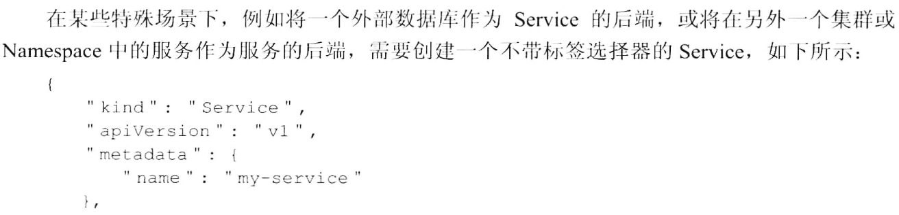 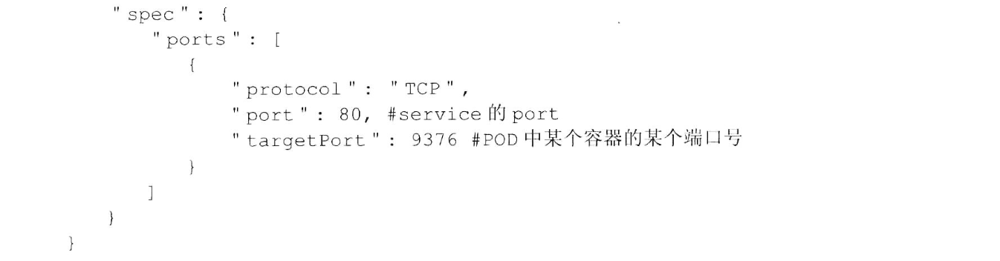 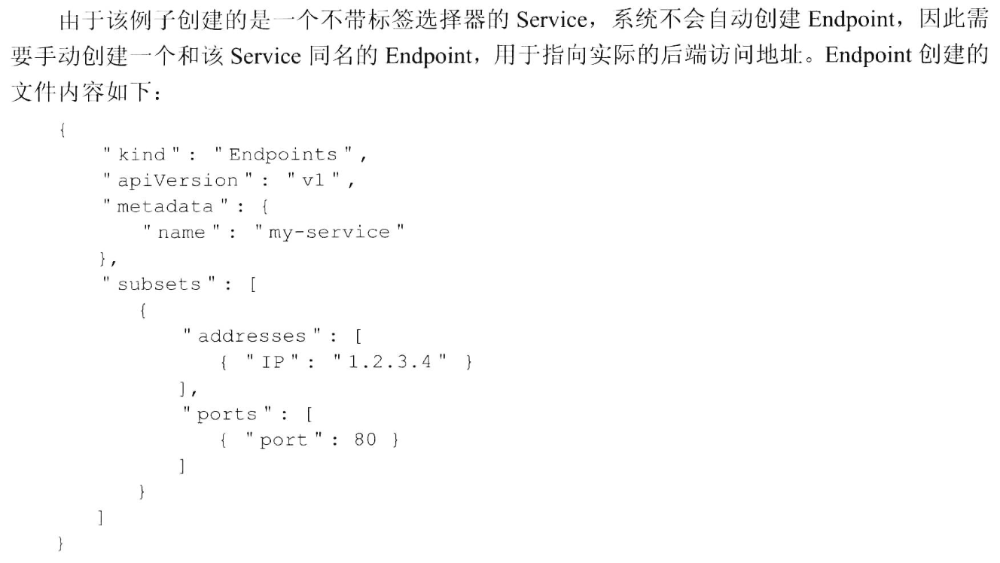 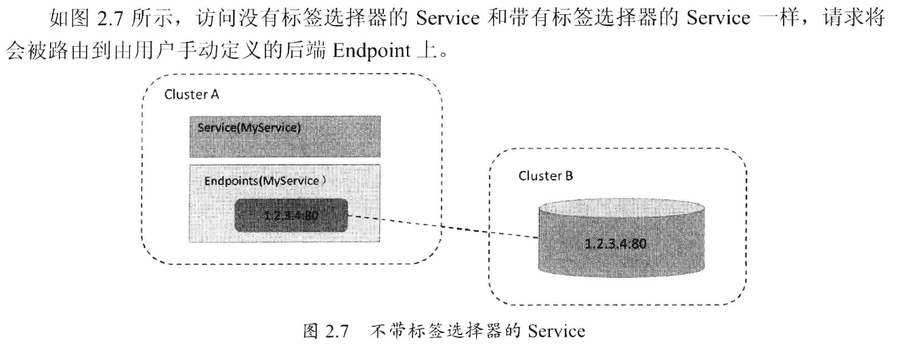
如何通过虚拟IP访问到后端Pod呢？ 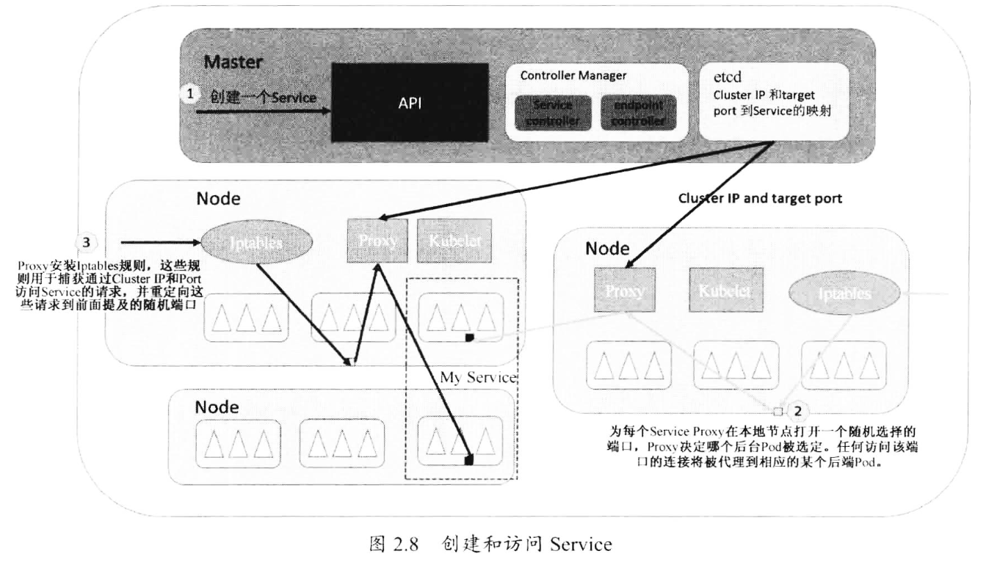
在K8s集群中的每个节点上都运行着一个叫作“kube-proxy”的进程，该进程会观察K8s Master节点添加和删除“Service”和“Endpoint”的行为，如图第1步所示。kube-proxy为每个Service在本地主机上开一个端口（随机选择）。任何访问该端口的连接都被代理到相应的一个后端Pod上。kube-proxy根据Round Robin算法及Service的Session粘连（SessionAffinity）决定哪个后端Pod被选中，如图第2步所示。最后，如图第3步所示，kube-proxy在本地的Iptables中安装相应的规则，这些规则使得Iptables将捕获的流量（通过Cluster IP和Port访问的Service的请求）重定向到前面提及的随机端口。通过该端口流量再被kube-proxy转到相应的后端Pod上。
在创建了服务后，服务Endpoint模型会创建后端Pod的IP和端口列表（包含在Endpoints对象中），kube-proxy就是从这个Endpoints列表中选择服务后端的。集群内的节点通过虚拟IP和端口能够访问Service后端的Pod。
默认情况下，K8s会为Service指定一个集群IP（或虚拟IP、cluster IP），但在某些情况下，用户希望能够自己指定该集群IP。为了给Service指定集群IP，用户只需要在定义Service时，在Service的spec.clusterIP域中设置所需要的IP地址即可。为Service指定的IP地址必须在集群的CIDR范围内。如果该IP地址是非法的，那么API Server会返回422 HTTP状态码，表明IP地址值非法。
K8s支持两种主要的模式来找到Service：一种是容器的Service环境变量，另一种是DNS。
K8s集群内访问任意服务
通过容器的Service环境变量模式：
在创建一个Pod时，Kubelet在该Pod中的所有容器中为当前所有Service添加一系列环境变量。K8s既支持Docker links变量，也支持形如“{SERNAME}SERVICE_HOST”和“{SVCNAME}SERVICE_PORT”的变量。其中“{SVCNAME}”是大写的Service Name，同时Service Name包含的“-”符号会转化成“_”符号。
例如，名称为“redis-master”的Service，它对外暴露6379 TCP端口，且集群IP地址为10.0.0.11。Kubelet会为新建的容器添加如下环境变量： 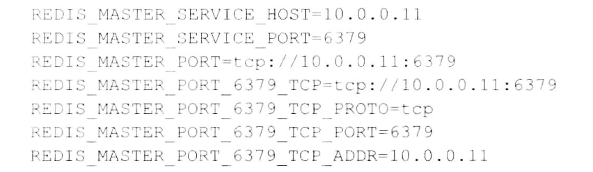
注意：任何被某个Pod所访问的Service，必须先于该Pod被创建。否则和这个后创建的Service相关的环境变量，将不会被加入该Pod的容器中。
通过名称找到服务的方式是DNS：
DNS服务器通过K8s API监控与Service相关的活动。当监控到添加Service时，DNS服务器为每个Service创建一系列DNS记录。例如，在K8s集群的“my-ns”Namespace中有一个叫做“my-service”的Service，用“my-service”通过DNS应该能够访问到“my-ns” Namespace中的后端Pod。如果在其他Namespace中访问这个Service，则用“my-service.my-ns”来查找该Service。DNS返回的查询结果是集群IP（虚拟IP、cluster IP）。
K8s也支持DNS SRC（Service）被命名端口的记录。如果“my-service.my-ns”Service有一个名为“http”的端口，则可以用“http.tcp.my-service.my-ns”通过DNS服务器找到对应的Pod暴露的端口。
K8s集群外访问任意服务
集群外部用户希望Service能够提供一个供集群外部用户访问的IP地址，甚至是公网IP地址，通过该IP来访问集群内的Service。
K8s提供了两种方式，一个是“NodePort”，另一个是“LoadBalancer”。
Service文件“spec.type”域为定义Service类型的地方，该域包含如下3个合法值。
- ClusterIP：默认值，仅使用集群内部虚拟IP（集群IP、Cluster IP）。
- NodePort：使用虚拟IP（集群IP、Cluster IP），同时通过在每个容器所在的节点上暴露相同的端口来暴露Service。这时，外部既可以通过容器所在节点IP+映射端口访问，还可以通过虚拟IP+映射端口访问。
如果在定义Service时，设置spec.type的值为“NodePort”，则K8s Master节点将为Service的nodePort指派一个端口范围（默认为30000~32767），每个节点的kube-proxy指定一个端口，则可以在Service定义中通过指定spec.ports.nodePort域的值实现，你所指定的端口必须在前面提及的端口范围中。如下图1、2、3、4所示。 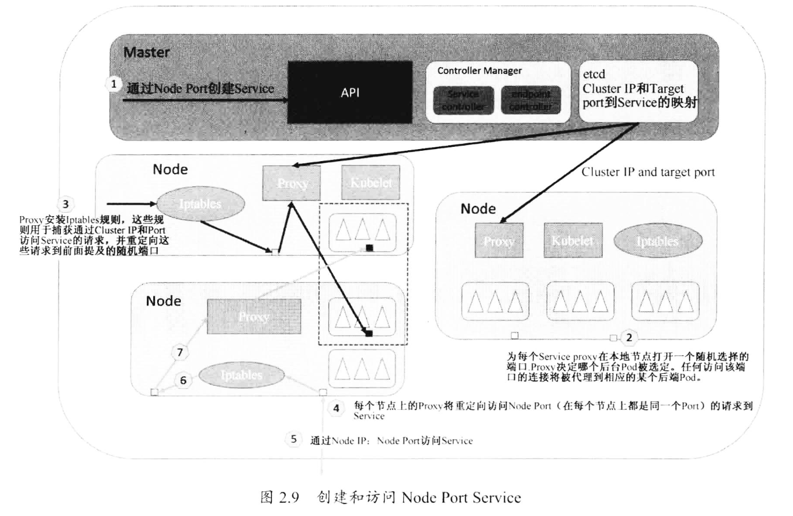
通过NodePort类型的Servcice，集群外的用户可以通过任一节点的IP及spec.ports.nodePort域指定的端口号访问Service后端的Pod，如图5、6、7所示。这使得开发者能够自由地设置其负载均衡器。
- LoadBalancer：使用虚拟IP（集群IP、Cluster IP）和NodePort，同时使用专门的服务均衡服务器做负载处理。
如果在定义Service时，设置spec.type的值为“NodePort”，则K8s Master节点将为Service的NodePort。
Scheduler（kube-scheduler）进程
Kubernetes Scheduler的作用是将待调度的Pod（API新创建的Pod、Controller Manager为补足副本而常见的Pod等）按照特定的调度算法和调度策略绑定（Binding）到集群中的某个合适的Node上，并将绑定信息写入etcd中。
在整个调度过程中设计三个对象，分别是：待调度Pod列表、可用Node列表，以及调度算法和策略。简单地说，就是通过调度算法调度来为待调度Pod列表的每个Pod从Node列表中选择一个最适合的Node。
随后，目标节点上的Kubelet通过API Server监听到Kubernetes Scheduler产生的Pod绑定事件，然后获取对应的Pod清单，下载Image镜像，并启动容器。
Kubernetes Scheduler当前提供的默认调度流程分为如下两步：
- 预先调度过程，即便利所有目标Node，筛选出符合要求的候选节点。因此，K8s内置了多种预选策略（xxx Predicates）供用户选择。
- 确定最优节点，在第一步的基础上，采用优选策略（xxx Priority）计算出每个候选节点的积分，积分最高者胜出。
K8s Scheduler的调度流程是通过插件方式加载的“调度算法提供者”（AlgorithmProvider）具体实现的。一个调度算法提供者其实就是包罗了一组预选策略与一组优选选择策略的结构体，注册AlgorithmProvider的函数如下：
Scheduler中可用的预选策略包括：NoDiskConflict、PodFitsResources、PodSelectorMatches、PodFitsHost、CheckNodeLabelPresence、CheckServiceAffinity和PodFitsPorts策略等。默认的AlgorithmProvider加载的预选策略Predicates包括：NoDiskConflict、PodFitsResources、PodSelectorMatches、PodFitsHost和PodFitsPorts，即每个节点只有通过前面提及的5个默认预选策略后，才能出不被选中，进入下一个流程。
预选策略介绍
下面列出所有预选策略的详细说明：

优选策略介绍
Scheduler中的优选策略包含：LeastRequestedPriority、CalculateNodeLabelPriority和BalancedResourceAllocation等。每个节点通过优先选择策略时都会算出一个得分，计算各项得分，最终选出得分值最大的节点作为优选的结果（也是调度算法的结果）。

2. 请求访问API Server的客户端
为提供对K8s API Sever进行API调用，除了直接使用Http调用外，K8s提供了命令行工具Kubectl，用它来将API Server的API包装成简单的命令集供我们使用。K8s及各开源社区为开发人员提供了各种语言版本的Client Libraries，通过这些Client Libraries或HTTP REST程序包，开发人员能够使用自己编写的程序访问K8s API Server。
Kubectl进程
K8s提供了命令行工具Kubectl，用它来将API Server的API包装成简单的命令集供我们使用。Kubectl的实现原理很简单，它首先把用户的输入转换为对API Server的REST API调用（包含API地址和访问参数），然后发起远程调用，并将调用结果输出。
Kubectl命令如下：
xxxxxxxxxxkubectl [command] [options]command列表
| 命令 | 说明 |
|---|---|
| get | 显示一个或多个资源的信息 |
| describe | 详细描述某个资源的信息 |
| create | 通过文件名或标准输入创建一个资源 |
| update | 通过文件名或标准输入修改一个资源 |
| delete | 通过文件名、标准输入、资源的ID或标签删除资源 |
| namespace | 设置或查看当前请求的命名空间 |
| logs | 打印在Pod中的容器的日志信息 |
| rolling-update | 对一个给定的ReplicationController执行滚动更新（Rolling Update） |
| scale | 调节Replication Controller副本数量 |
| exec | 在某个容器内执行某条命令 |
| port-forward | 为某个Pod设置一个或多个端口转发 |
| proxy | 运行Kubernetes API Server代理 |
| run | 在集群中运行一个独立的镜像（Image） |
| stop | 通过ID或资源名称删除一个资源 |
| expose | 将资源对象暴露为Kubernetes Service |
| label | 修改某个资源上的标签（Label） |
| config | 修改集群的配置信息 |
| cluster-info | 显示集群信息 |
| api-versions | 显示API版本信息 |
| version | 打印Kubectl和API Server版本信息 |
| help | 帮助命令 |
Java语言Client Libraries
3. Slave端进程
Kubelet进程
在K8s集群中，在每个Node节点上都会启动一个Kubelet服务进程。
- 该进程用于处理Master节点下发到本节点的任务，管理Pod及Pod中的容器。
- 每个Kubelet进程会在API Server上注册节点自身信息，定期向Master节点回报节点资源的使用情况，并通过cAdvise监控容器和节点资源。
节点管理
节点通过设置Kubelet的启动参数“--register-node”，来决定是否向API Server注册自己。如果该参数值为true，那么Kubelet将试着通过API Server注册自己。
Kubelet启动时还包含下列参数：
Pod管理
所有以非API Server方式创建的Pod都叫做Static Pod。Kubelet将Static Pod的状态汇报给API Server，API Server为该Static Pod创建一个Mirror Pod和其相匹配。Mirror Pod的状态将真实反映Static Pod状态。当Static Pod被删除时，与之相对应的Mirror Pod也会被删除。在本章中我们只讨论通过API Server获得Pod清单的方式。Kubelet通过API Server Client使用Watch加List的方式监听“/registry/nodes/$当前节点的名称”和“/registry/pods”目录，将获取的信息同步到本地缓存中。
Kubelet监听etcd，所有针对Pod的操作将会被Kubelet监听到。如果发现有新的绑定到本节点的Pod，则按照Pod清单的要求创建该Pod。
如果发现本地的Pod被修改，则Kubelet会做出相应的修改，比如删除Pod中的某个容器时，则通过Docker Client删除该容器。
如果发现删除本节点的Pod，则删除相应的Pod，并通过Docker Client删除Pod中的容器。
Kubelet读取监听到的信息，如果是创建和修改Pod任务，则作如下处理：
- 为该Pod创建一个数据目录
- 从API Server读取该Pod清单
- 为该Pod挂载外部卷（Extenal Volume）
- 下载Pod用到的secret
- 检查已经运行在节点中的Pod，如果该Pod没有容器或Pause容器（“kubernetes/pause”镜像创建的容器）没有启动，则先停止Pod里所有容器的进程。如果在Pod中有需要删除的容器，则删除这些容器。
- 用“kubernetes/pause”镜像为每个Pod创建一个容器。该Pause容器用于接管Pod中所有其他容器的网络。每创建一个新的Pod，Kubelet都会先创建一个Pause容器，然后创建其他容器。“kubernetes/pause”镜像大概为200KB，是一个非常小的容器镜像。
- 为Pod中的每个容器作如下处理：
如果容器被中止了，且容器没有指定的restartPolicy（重启策略），则不作任何处理；调用Docker Client下载容器镜像，调用Docker Client运行容器。
容器健康检查
cAdvisor资源监控
在Kubernetes集群中如何监控资源的使用情况？
在Kubernetes集群中，应用程序的执行情况可以在不同的级别上检测到，这些级别包括：容器、Pod、Service和整个集群。Kubernetes希望提供给用户详细的各个级别的资源使用信息，这将使用户能够深入地了解应用的执行情况，并找到应用中可能的瓶颈。
Heapster项目为K8s提供了一个基本的监控平台，它是集群级别的监控和事件数据集成器（Aggregator）。Heapster作为Pod运行在K8s集群中，和运行在K8s集群中的其他应用相似。Heapster Pod通过Kubelet发现所有运行在集群中的节点，并查看来自这些节点的资源使用状况信息。Kubelet通过cAdvisor获取其所在节点及该节点上所有容器的数据，Heapster通过带着关联标签的Pod分组这些信息，这些数据被推到一个可配置的后端，用于存储和可视化展示。当前支持的后端包括InfluxDB(with Grafana for Visualization)和Google Cloud Monitoring。
cAdvisor是一个开源的分析容器资源使用率和性能特性的代理工具。自然支持Docker容器。在K8s项目中，cAdvisor被集成到K8s代码中。
cAdvisor自动查找所有在其所在节点上的容器，自动采集CPU、内存、文件系统和网络使用的统计信息。cAdvisor通过它所在节点机的Root容器，采集并分析该节点机的全面的使用情况。
在大部分K8s集群中，cAdvisor通过它所在节点机的4194端口暴露一个简单的UI。
cAdviosr是Google用来监测单节点的资源信息的监控工具。虽然Docker提供了一些CLI的命令行的功能，但是在一个看图的时代，基本的功能是很难满足人民群众日益增长的物质文化需求，cAdviosr提供了一目了然的单节点多容器的资源监控功能。Google的Kubernetes中也缺省地将其作为单节点的资源监控工具，各个节点缺省会被安装上cAdviosr。在免费的世界里，cAdviosr作为一个很不错的工具，越来越多的引起很多人过渡性的关注。
演示手动安装cAdvisor容器：
docker pull google/cadvisor的镜像
xxxxxxxxxx[root@host31 ~]# docker pull docker.io/google/cadvisorDocker run
xxxxxxxxxxdocker run \ --volume=/:/rootfs:ro \ --volume=/var/run:/var/run:rw \ --volume=/sys:/sys:ro \ --volume=/var/lib/docker/:/var/lib/docker:ro \ --publish=8090:8080 \ --detach=true \ --name=cadvisor \ google/cadvisor:latest[root@host31 ~]#使用cAdvisor监控节点信息
Docker container相关信息 http://img.blog.csdn.net/20160803054929436
Docker container详细信息
http://img.blog.csdn.net/20160803054942952
整体使用状况
http://img.blog.csdn.net/20160803055229893
CPU详细状况 http://img.blog.csdn.net/20160803055349986
内存详细状况 http://img.blog.csdn.net/20160803055521518
Network
http://img.blog.csdn.net/20160803055625477
FileSystem和Subcontainer
http://img.blog.csdn.net/20160803055802941
我的服务器监控数据
http://123.59.228.79:4194/containers/
Kubelet作为连接K8s Master和各节点机之间的桥梁，管理运行在节点机上的Pod和容器。Kubelet将每个Pod转换成它的成员容器，同时从cAdvisor获取单独的容器使用统计信息，然后通过该REST API暴露这些聚合后的Pod资源使用的统计信息。
Kube-proxy进程
Kube-proxy进程实现了Service的代理及软件模式的负载均衡器。
Kube-proxy进程为每个Service都建立一个”服务代理对象“，它包括一个用于监听此服务请求的SocketServer，SocketServer的端口是随机选择的一个本地空闲端口。此外，kube-proxy内部也创建了一个”负载均衡器组件“，用来实现SocketServer上收到的连接到后端多个Pod连接之间的负载均衡和会话保持能力。下面详细讲解。
1 Kubernetes网络模型
Kubernetes会基于Pod级别创建一个网络栈，和一个节点上Docker daemon不再一个网段。
同一个Pod内的不同容器将会共享一个网络命名空间，这意味着同一个Pod内的容器可以通过localhost来连接对方的端口。
在使用Kubernetes+Docker集群前，需要搭建一个保证所有Docker Daemon在一个网段、不同范围的网络环境。经常使用覆盖网络flannel、直接路由等方式。详细看后面。
2 Docker的网络基础
Docker本身的技术依赖于近年Linux内核虚拟化技术的发展，所以Docker对Linux内核的特性有很强的依赖。Docker使用到的与Linux网络相关的主要技术有下面：
- 网络命名空间（Network Namespace）
- Veth设备对
- Iptables/Netfilter
- 网桥
- 路由
网络的命名空间
为了支持网络协议栈的多个实例，Linux在网络栈中引入了网络命名空间（Network Namespace），这些独立的协议栈被隔离到不同的命名空间中。处于不同命名空间的网络栈是完全隔离的，彼此之前互相无法同心。通过这种对网络资源的隔离，就能在一个宿主机上虚拟多个不同的网络环境。而Docker也是利用了网络的命名空间特性，实现了不同容器之间网络的隔离。
在Linux的网络命名空间内可以有自己独立的路由表及独立的Iptables/Netfilter设置来提供包转发、NAT及IP包过滤等功能。
为了隔离出独立的协议栈，需要纳入命名空间的元素有进程、套接字、网络设备等。进程创建的套接字必须属于某个命名空间，套接字的操作也必须在命名空间内进行。同样，网络设备也必须属于某个命名空间。因为网络设备属于公共资源，所以可以通过修改属性实现在命名空间之间移动。当然，是否允许移动和设备的特征有关。
为了支持独立的协议栈，Linux使用协议栈的函数上加上一个Namespace参数，来实现不同命名空间的不同控制。
新生成的私有命名空间只有回环lo设备（而且是停止的）。
xxxxxxxxxx#查询所有网络命名空间[root@localhost ~]# ip netns listnetns1 (id: 0)testlyn#增加网络命名空间[root@localhost ~]# ip netns add netns2#查看指定网络命名空间netns2的所有设备，可看到至于回环lo设备[root@localhost ~]# ip netns exec netns2 ip link show1: lo: <LOOPBACK> mtu 65536 qdisc noop state DOWN mode DEFAULT qlen 1 link/loopback 00:00:00:00:00:00 brd 00:00:00:00:00:00#查看默认网络命名空间的所有设备[root@localhost ~]# ip link show1: lo: <LOOPBACK,UP,LOWER_UP> mtu 65536 qdisc noqueue state UNKNOWN mode DEFAULT qlen 1 link/loopback 00:00:00:00:00:00 brd 00:00:00:00:00:002: eth0: <BROADCAST,MULTICAST,UP,LOWER_UP> mtu 1500 qdisc pfifo_fast state UP mode DEFAULT qlen 1000 link/ether 52:54:00:88:15:b6 brd ff:ff:ff:ff:ff:ff4: veth0@if3: <BROADCAST,MULTICAST,UP,LOWER_UP> mtu 1500 qdisc noqueue state UP mode DEFAULT qlen 1000 link/ether f6:80:63:4f:ec:8e brd ff:ff:ff:ff:ff:ff link-netnsid 0[root@localhost ~]# 所有的网络设备（物理的或虚拟接口、桥）都只能属于一个命名空间。当然的，物理设备（实际硬件的设备）只能关联到root这个命名空间。虚拟的网络设备（虚拟的以太网接口）则可以被创建并关联到一个给定的命名空间，而且可以在这些命名空间之间移动。后面讲Veth设备对会演示veth1设备怎么从root命名空间下挪到netns1命名空间的，并实现通信。
由于网络命名空间是一个独立的协议栈，它们之间是相互隔离的，彼此无法同心，如何让处于不同命名空间的网络相互通信呢，就是使用Veth设备对一对Veth设备对，创建。Veth设备对就是打通互相看不到的协议栈之间的壁垒，一端连着这个网络命名空间的协议栈，一端连着另一个网络命名空间的协议栈。
Veth设备对
引入Veth设备对是为了在不同的网络命名空间之间进行通信，利用它可以直接将两个网络命名空间连接起来。Veth设备都是成对出现的，我们将其中一端称为另一端的peer。在Veth设备的一端发送数据时，它会将数据直接发送到另一端，并触发另一端的接收操作。

xxxxxxxxxx[root@localhost ~]# ip link show1: lo: <LOOPBACK,UP,LOWER_UP> mtu 65536 qdisc noqueue state UNKNOWN mode DEFAULT qlen 1 link/loopback 00:00:00:00:00:00 brd 00:00:00:00:00:002: eth0: <BROADCAST,MULTICAST,UP,LOWER_UP> mtu 1500 qdisc pfifo_fast state UP mode DEFAULT qlen 1000 link/ether 52:54:00:88:15:b6 brd ff:ff:ff:ff:ff:ff4: veth0@if3: <BROADCAST,MULTICAST> mtu 1500 qdisc noop state DOWN mode DEFAULT qlen 1000 link/ether f6:80:63:4f:ec:8e brd ff:ff:ff:ff:ff:ff link-netnsid 0[root@localhost ~]# ip netns exec netns1 ip link show1: lo: <LOOPBACK> mtu 65536 qdisc noop state DOWN mode DEFAULT qlen 1 link/loopback 00:00:00:00:00:00 brd 00:00:00:00:00:003: veth1@if4: <BROADCAST,MULTICAST> mtu 1500 qdisc noop state DOWN mode DEFAULT qlen 1000 link/ether 92:1c:04:7a:22:12 brd ff:ff:ff:ff:ff:ff link-netnsid 0[root@localhost ~]#
xxxxxxxxxx[root@localhost ~]# ip link show1: lo: <LOOPBACK,UP,LOWER_UP> mtu 65536 qdisc noqueue state UNKNOWN mode DEFAULT qlen 1 link/loopback 00:00:00:00:00:00 brd 00:00:00:00:00:002: eth0: <BROADCAST,MULTICAST,UP,LOWER_UP> mtu 1500 qdisc pfifo_fast state UP mode DEFAULT qlen 1000 link/ether 52:54:00:88:15:b6 brd ff:ff:ff:ff:ff:ff4: veth0@if3: <BROADCAST,MULTICAST,UP,LOWER_UP> mtu 1500 qdisc noqueue state UP mode DEFAULT qlen 1000 link/ether f6:80:63:4f:ec:8e brd ff:ff:ff:ff:ff:ff link-netnsid 0[root@localhost ~]# ethtool -S veth0NIC statistics: peer_ifindex: 3[root@localhost ~]# ip netns exec netns1 ip link show1: lo: <LOOPBACK> mtu 65536 qdisc noop state DOWN mode DEFAULT qlen 1 link/loopback 00:00:00:00:00:00 brd 00:00:00:00:00:003: veth1@if4: <BROADCAST,MULTICAST,UP,LOWER_UP> mtu 1500 qdisc noqueue state UP mode DEFAULT qlen 1000 link/ether 92:1c:04:7a:22:12 brd ff:ff:ff:ff:ff:ff link-netnsid 0[root@localhost ~]# ip netns exec netns1 ethtool -S veth1NIC statistics: peer_ifindex: 4[root@localhost ~]#网桥
就理解成是一个虚拟交换机。创建docker0网桥，给这个网桥分配一个子网（就是自己规定一个IP段），然后后面将docker的容器里设备Veth设备对到这个网桥上，然后从网桥的地址段内给容器内的指定一个IP地址。
Iptables/Netfilter
 当Linux协议栈的数据处理运行到挂节点（图2.22上那5个）时，它会依次调用挂节点上所有的挂钩函数，直到数据包的处理结果是明确地接受或者拒绝。
当Linux协议栈的数据处理运行到挂节点（图2.22上那5个）时，它会依次调用挂节点上所有的挂钩函数，直到数据包的处理结果是明确地接受或者拒绝。
路由
3 Docker的网络实现
在bridge模式下，Docker Daemon第一次启动时会创建一个虚拟的网桥，缺省的名字是docker0，然后按照RPC1918的模型，在私有网络空间中给这个网桥分配一个子网。针对由Docker创建出来的每一个容器，都会创建一个虚拟的以太网设备（Veth设备对），其中一端关联到网桥上，另一端使用Linux的网络命名空间技术，映射到容器内的eth0设备，然后从网桥的地址段内给eth0接口分配一个IP地址。（用到前面5部分内容）
其中ip1是网桥的IP地址，Docker Daemon会在几个备选地址段里给它选一个，通常是172的一个地址。这个地址和主机的IP地址是不重叠的。ip2是Docker在启动容器的时候，在这个地址段随机选择的一个没有使用的IP地址，占用它并分配给了被启动的容器。相应的MAC地址也根据这个IP地址，在02:42:ac:11:00:00和02:42:ac:11:ff:ff的范围内生成。启动时，Docker还将Veth对的名字映射到了eth0网络接口。ip3就是主机的网卡地址。
启动后，Docker还将Veth对的名字映射到了eth0网络接口。ip3就是主机的网卡地址。
在一般情况下，ip1、ip2和ip3是不同的IP段，所以在缺省不作任何特殊配置的情况下，在外部是看不到ip1和ip2的。
当使用Docker容器时，网络发生了哪些变化
结合下面例子会彻底理解网络命名空间，Veth设备对，网桥，Iptables/Netfilter、路由
1) 查看Docker启动后的系统情况
我们已经知道，Docker网络在bridge模式下Docker Daemon启动时创建docker0网桥，并在网桥使用的网段为容器分配IP。让我们看看实际的操作：
在刚刚启动Docker Daemon，并且没有启动任何容器的时候，网络协议栈的配置情况如下：
xxxxxxxxxx[root@localhost ~]# systemctl start docker[root@localhost ~]# ip addr1: lo: <LOOPBACK,UP,LOWER_UP> mtu 65536 qdisc noqueue state UNKNOWN qlen 1 link/loopback 00:00:00:00:00:00 brd 00:00:00:00:00:00 inet 127.0.0.1/8 scope host lo valid_lft forever preferred_lft forever inet6 ::1/128 scope host valid_lft forever preferred_lft forever2: eth0: <BROADCAST,MULTICAST,UP,LOWER_UP> mtu 1500 qdisc pfifo_fast state UP qlen 1000 link/ether 52:54:00:88:15:b6 brd ff:ff:ff:ff:ff:ff inet 10.0.2.15/24 brd 10.0.2.255 scope global dynamic eth0 valid_lft 85983sec preferred_lft 85983sec inet6 fe80::5054:ff:fe88:15b6/64 scope link valid_lft forever preferred_lft forever3: docker0: <NO-CARRIER,BROADCAST,MULTICAST,UP> mtu 1500 qdisc noqueue state DOWN link/ether 02:42:1e:31:a3:71 brd ff:ff:ff:ff:ff:ff inet 172.17.0.1/16 scope global docker0 valid_lft forever preferred_lft forever[root@localhost ~]# iptables-save# Generated by iptables-save v1.4.21 on Fri Jun 2 02:33:16 2017*nat:PREROUTING ACCEPT [0:0]:INPUT ACCEPT [0:0]:OUTPUT ACCEPT [2:144]:POSTROUTING ACCEPT [2:144]:DOCKER - [0:0]-A PREROUTING -m addrtype --dst-type LOCAL -j DOCKER-A OUTPUT ! -d 127.0.0.0/8 -m addrtype --dst-type LOCAL -j DOCKER-A POSTROUTING -s 172.17.0.0/16 ! -o docker0 -j MASQUERADE-A DOCKER -i docker0 -j RETURNCOMMIT# Completed on Fri Jun 2 02:33:16 2017# Generated by iptables-save v1.4.21 on Fri Jun 2 02:33:16 2017*filter:INPUT ACCEPT [47:2735]:FORWARD ACCEPT [0:0]:OUTPUT ACCEPT [25:2268]:DOCKER - [0:0]:DOCKER-ISOLATION - [0:0]-A FORWARD -j DOCKER-ISOLATION-A FORWARD -o docker0 -j DOCKER-A FORWARD -o docker0 -m conntrack --ctstate RELATED,ESTABLISHED -j ACCEPT-A FORWARD -i docker0 ! -o docker0 -j ACCEPT-A FORWARD -i docker0 -o docker0 -j ACCEPT-A DOCKER-ISOLATION -j RETURNCOMMIT# Completed on Fri Jun 2 02:33:16 2017[root@localhost ~]# 可以看到，Docker创建了docker0网桥，并添加了Iptables规则。docker0网桥和Iptables规则都处于root命名空间中。解读这些规则会发现，在没有启动任何容器时候，如果启动了Docker Daemon，那么它就已经做好了通信的准备。解释这些规则：
在nat表中：
第一、二条匹配生效后，都会继续执行DOCKER链，而此时DOCKER链为空，所以前两条只是做了个框架，并没有实际效果。后面再启动做端口映射了得容器时，会用到DOCKER链。
第三条含义是，若本地发出的数据包不是发往docker0的，即是发往主机之外的设备的，都需要进行动态地址修改（MASQUERADE），将源地址从容器的地址（172段）修改为宿主机网卡的IP地址，之后就可以发送给外面的网络了。
在filter表中：
第二条也是一个框架，因为后继的DOCKER链是空的。
第三条是说，如果接收到的数据包属于以前已经建立好的连接，那么允许直接通过。这样接收到的数据包自然又走到docker0，并中转到相应的容器。
第四条是说，docker0发出的包，如果需要Forward到非docker0的本地IP地址的设备，则是允许的，这样，docker0设备的包就可以根据路由规则中转到宿主机的网卡设备，从而访问外面的网络。
第五条是说，docker0的包还可以中转给docker0本身，即连接在docker0网桥上的不同容器之间的通信也是允许的。
除了这些Netfilter的设置，Linux的ip_forward功能也被Docker Daemon打开了：
xxxxxxxxxx[root@localhost ~]# cat /proc/sys/net/ipv4/ip_forward1[root@localhost ~]#另外，我们还可以看到刚刚启动Docker后的Route表，和启动前没有什么不同：
xxxxxxxxxx[root@localhost ~]# ip routedefault via 10.0.2.2 dev eth0 proto static metric 10010.0.2.0/24 dev eth0 proto kernel scope link src 10.0.2.15 metric 100172.17.0.0/16 dev docker0 proto kernel scope link src 172.17.0.1[root@localhost ~]#2) 查看容器启动后的情况（容器无端口映射）
刚才我们看了Docker服务启动后的网络情况。现在，我们启动一个Registry容器后（不使用任何端口镜像参数），看一下网络堆栈部分相关的变化：
xxxxxxxxxx[root@localhost ~]# docker run --name register -d registry93729ce2a2454461ee497384a1b9054f26e9bda035d26d671c90dbfc2de3081a[root@localhost ~]# ip addr1: lo: <LOOPBACK,UP,LOWER_UP> mtu 65536 qdisc noqueue state UNKNOWN qlen 1 link/loopback 00:00:00:00:00:00 brd 00:00:00:00:00:00 inet 127.0.0.1/8 scope host lo valid_lft forever preferred_lft forever inet6 ::1/128 scope host valid_lft forever preferred_lft forever2: eth0: <BROADCAST,MULTICAST,UP,LOWER_UP> mtu 1500 qdisc pfifo_fast state UP qlen 1000 link/ether 52:54:00:88:15:b6 brd ff:ff:ff:ff:ff:ff inet 10.0.2.15/24 brd 10.0.2.255 scope global dynamic eth0 valid_lft 84632sec preferred_lft 84632sec inet6 fe80::5054:ff:fe88:15b6/64 scope link valid_lft forever preferred_lft forever3: docker0: <BROADCAST,MULTICAST,UP,LOWER_UP> mtu 1500 qdisc noqueue state UP link/ether 02:42:1e:31:a3:71 brd ff:ff:ff:ff:ff:ff inet 172.17.0.1/16 scope global docker0 valid_lft forever preferred_lft forever inet6 fe80::42:1eff:fe31:a371/64 scope link valid_lft forever preferred_lft forever5: veth4652561@if4: <BROADCAST,MULTICAST,UP,LOWER_UP> mtu 1500 qdisc noqueue master docker0 state UP link/ether 26:83:1e:9f:82:bb brd ff:ff:ff:ff:ff:ff link-netnsid 0 inet6 fe80::2483:1eff:fe9f:82bb/64 scope link valid_lft forever preferred_lft forever[root@localhost ~]#Docker Daemon为容器创建了个网络命名空间。我们看一下这个网络命名空间的Veth设备对是哪个
xxxxxxxxxx[root@localhost ~]# ethtool -S veth4652561NIC statistics: peer_ifindex: 4对应的是容器内网桥索引。
xxxxxxxxxx[root@localhost ~]# iptables-save# Generated by iptables-save v1.4.21 on Fri Jun 2 03:01:33 2017*nat:PREROUTING ACCEPT [1:100]:INPUT ACCEPT [1:100]:OUTPUT ACCEPT [171:12158]:POSTROUTING ACCEPT [171:12158]:DOCKER - [0:0]-A PREROUTING -m addrtype --dst-type LOCAL -j DOCKER-A OUTPUT ! -d 127.0.0.0/8 -m addrtype --dst-type LOCAL -j DOCKER-A POSTROUTING -s 172.17.0.0/16 ! -o docker0 -j MASQUERADE-A DOCKER -i docker0 -j RETURNCOMMIT# Completed on Fri Jun 2 03:01:33 2017# Generated by iptables-save v1.4.21 on Fri Jun 2 03:01:33 2017*filter:INPUT ACCEPT [3600:10945550]:FORWARD ACCEPT [0:0]:OUTPUT ACCEPT [3196:192735]:DOCKER - [0:0]:DOCKER-ISOLATION - [0:0]-A FORWARD -j DOCKER-ISOLATION-A FORWARD -o docker0 -j DOCKER-A FORWARD -o docker0 -m conntrack --ctstate RELATED,ESTABLISHED -j ACCEPT-A FORWARD -i docker0 ! -o docker0 -j ACCEPT-A FORWARD -i docker0 -o docker0 -j ACCEPT-A DOCKER-ISOLATION -j RETURNCOMMIT# Completed on Fri Jun 2 03:01:33 2017[root@localhost ~]#[root@localhost ~]#[root@localhost ~]# ip routedefault via 10.0.2.2 dev eth0 proto static metric 10010.0.2.0/24 dev eth0 proto kernel scope link src 10.0.2.15 metric 100172.17.0.0/16 dev docker0 proto kernel scope link src 172.17.0.1[root@localhost ~]#可以看到：
（1）宿主机器上的Netfilter和路由表都没有变化，说明在不进行端口映射时，Docker的默认网络是没有特殊处理的。相关的NAT和FILTER两个Netfilter链都还是空的。
（2）宿主机上的Vet对已经建立，并可以连接到了容器内。
我们再进入刚刚启动的容器内，看看网络栈是什么情况。容器内部的IP地址和路由如下：
xxxxxxxxxx[root@localhost ~]# docker psCONTAINER ID IMAGE COMMAND CREATED STATUS PORTS NAMES93729ce2a245 registry "/entrypoint.sh /etc/" 10 minutes ago Up 10 minutes 5000/tcp register[root@localhost ~]# docker exec -ti 93729ce2a245 /bin/sh/ # ip routedefault via 172.17.0.1 dev eth0172.17.0.0/16 dev eth0 src 172.17.0.2/ # ip addr1: lo: <LOOPBACK,UP,LOWER_UP> mtu 65536 qdisc noqueue state UNKNOWN qlen 1 link/loopback 00:00:00:00:00:00 brd 00:00:00:00:00:00 inet 127.0.0.1/8 scope host lo valid_lft forever preferred_lft forever inet6 ::1/128 scope host valid_lft forever preferred_lft forever4: eth0@if5: <BROADCAST,MULTICAST,UP,LOWER_UP,M-DOWN> mtu 1500 qdisc noqueue state UP link/ether 02:42:ac:11:00:02 brd ff:ff:ff:ff:ff:ff inet 172.17.0.2/16 scope global eth0 valid_lft forever preferred_lft forever inet6 fe80::42:acff:fe11:2/64 scope link valid_lft forever preferred_lft forever/ #我们可以看到，默认挺值得回路设备lo已经被启动，外面宿主机连接进来的Veth设备也被命名成了eth0，并且也可以配置了地址172.17.0.10。
路由信息表包含了一条到docker0的子网络和一条到docker0的默认路由。
3）查看容器启动后的情况（容器有端口映射）
下面，我们用端口映射的命令启动registry：
xxxxxxxxxx[root@localhost ~]# docker run --name register -d -p 1180:5000 registryd17de890f341be7feaab1e6557f51f744fe863a30787953e8bd4870fda820f7d[root@localhost ~]#在启动后查看Iptables的变化。
xxxxxxxxxx[root@localhost ~]# iptables-save# Generated by iptables-save v1.4.21 on Fri Jun 2 03:12:09 2017*nat:PREROUTING ACCEPT [0:0]:INPUT ACCEPT [0:0]:OUTPUT ACCEPT [0:0]:POSTROUTING ACCEPT [0:0]:DOCKER - [0:0]-A PREROUTING -m addrtype --dst-type LOCAL -j DOCKER-A OUTPUT ! -d 127.0.0.0/8 -m addrtype --dst-type LOCAL -j DOCKER-A POSTROUTING -s 172.17.0.0/16 ! -o docker0 -j MASQUERADE-A POSTROUTING -s 172.17.0.2/32 -d 172.17.0.2/32 -p tcp -m tcp --dport 5000 -j MASQUERADE-A DOCKER -i docker0 -j RETURN-A DOCKER ! -i docker0 -p tcp -m tcp --dport 1180 -j DNAT --to-destination 172.17.0.2:5000COMMIT# Completed on Fri Jun 2 03:12:09 2017# Generated by iptables-save v1.4.21 on Fri Jun 2 03:12:09 2017*filter:INPUT ACCEPT [15:852]:FORWARD ACCEPT [0:0]:OUTPUT ACCEPT [8:608]:DOCKER - [0:0]:DOCKER-ISOLATION - [0:0]-A FORWARD -j DOCKER-ISOLATION-A FORWARD -o docker0 -j DOCKER-A FORWARD -o docker0 -m conntrack --ctstate RELATED,ESTABLISHED -j ACCEPT-A FORWARD -i docker0 ! -o docker0 -j ACCEPT-A FORWARD -i docker0 -o docker0 -j ACCEPT-A DOCKER -d 172.17.0.2/32 ! -i docker0 -o docker0 -p tcp -m tcp --dport 5000 -j ACCEPT-A DOCKER-ISOLATION -j RETURNCOMMIT# Completed on Fri Jun 2 03:12:09 2017[root@localhost ~]# 从新增的规则可以看出，Docker服务在NAT和FILTER两个表内添加的的两个DOCKER子链都是给端口映射用的。例如本例中，我们需要把外部宿主机的1180端口映射到容器的5000端口。通过前面的分析我们知道，无论是宿主机接收到的还是宿主机本地协议发出的，目标地址是本地IP地址的包都会经过NAT表中的DOCKER子链。Docker为每一个端口映射都在这个链上增加了到实际容器目标地址和目标端口的转换。
经过这个DNAT的规则修改后的IP包，会重新经过路由模块的判断进行转发。由于目标地址和端口已经是容器的地址和端口，所以数据自然被送到了docker0上，从而送到对应的容器内部。
当然在Forward时，也需要在Docker子链中添加一条规则，如果目标端口和地址是指定容器的数据，则允许通过。
在Docker按照端口映射的方式启动容器时，主要的不同就是上述Iptables部分。而容器内部的路由和网络设备，都和不做端口映射时一样，没有任何变化。


4 Kubernetes的网络实现
容器到容器的通信
在同一个Pod内的容器（Pod内的容器是不会跨宿主机的）共享同一个网络命名空间，共享同一个Linux协议栈。所以对于网路的各类操作，就和它们在同一台机器上一样，他们甚至可以用localhost地址访问彼此的端口。
Pod之间的通信
每一个Pod都有一个真实的全局IP地址，同一个Node内的不同Pod之间可以直接采用对方Pod的IP地址通信，而且不需要使用其他发现机制，例如DNS、Consul或者etcd。
Pod容器既有可能在同一个Node上运行，也有可能在不同的Node上运行，所以通信也分为两类：同一个Node内的Pod之间的通信和不同Node上的Pod之间的通信。
1）同一个Node内的Pod之间的通信
我们看一下同一个Node上的两个Pod之间的关系，如图：
可以看出，Pod1和Pod2都是通过Veth连接在同一个docker0网桥上的，他们的IP地址IP1、IP2都是从docker0的网端上由docker daemon动态分配的，他们和网桥本身的IP3是同一个网段的。
另外，在Pod1、Pod2的Linux协议栈上，默认路由都是由docker0的地址，也就是说所有非本地地址的网络数据，都会被默认发送到docker0网桥上，由docker0网桥直接中转。
2）不同Node上的Pod之间的通信
Pod的地址是与docker0在同一个网段内的，我们知道docker0网段与宿主机网卡是两个完全不同的IP网段，并且不同Node之间的通信只能通过宿主机的物理网卡进行，因此要想实现位于不同Node上的Pod容器之间的通信，就必须想办法通过主机的这个IP地址来进行寻址和通信。
K8s使用docker0网卡为容器分配的IP作为Pod到Pod通信。
要想支持不同Node上的Pod之间的通信，就要达到两个条件：
（1）在整个K8s集群中对Pod的IP分配进行规划，不能有冲突；
（2）找到一种办法，将Pod的IP和所在Node的IP关联起来，通过这个关联让Pod可以互相访问。
根据条件1要求，我们需要在部署K8s的时候，对docker0的IP地址进行规划，保证每一个Node上的docker0地址没有冲突。我们可以在规划后手工配置到每个Node上，或者做一个分配规则，由安装的程序自己去分配占用。例如K8s的网络增强开源软件Fluunel就能够管理资源池的分配。
根据条件2要求，Pod中的数据在发出时，需要有一个机制能够知道对方Pod的IP地址挂在哪个具体的Node上。也就是说要先要找到Node对应宿主机的IP地址，将数据发送到这个宿主机的网卡上，然后在宿主机上将相应的数据转到具体的docker0上。一旦数据到达宿主机Node，则那个Node内部的docker0便知道如何将数据发送到Pod。
在上图中，IP1对应的时候Pod1，IP2对应的是Pod2。Pod1在访问Pod2时，首先要将数据从源Node的eth0发送出去，找到并到达Node2的eth0。也就是说先要从IP3到IP4，之后才是IP4到IP2的递送。
Google是使用GCE搭建的这个网络环境供K8s使用，而实际私有云环境中，因为安全、费用等种种原因，还需要额外的网络配置，通过一些软件来实现K8s对网络的要求。
怎么打通两个Node的网络，配置网络，后面讲。
Pod到Servcice之间的通信
我们在前面已经了解到，为了支持集群的水平扩展、高可用，K8s抽象出Service的概念。Service是对一组Pod的抽象，它会根据访问策略（如负载均衡策略）来访问这组Pod。
K8s在创建服务后会为服务分配一个虚拟的IP地址，客户端通过访问这个虚拟的IP地址来访问服务，而服务则负责将请求转发到后端的Pod上。这就是一个反向代理。它的部署和启停是K8s统一自动管理的。真正将服务的作用落实的是背后的kube-proxy服务进程。下面讲kube-proxy原理：
在K8s集群的每个Node上都会运行一个kube-proxy服务进程，这个进程可以看做Service的透明代理建负载均衡器，其核心功能是将某个Service的访问请求转发到后端的多个Pod实例上。（后面详细讲，这里会用到一个随端口映射）对每一个TCP类型的K8s Service，kube-proxy都会在本地Node上建立一个SocketServer来负责接受请求，然后均匀发送到后端某个Pod的端口上，这个过程默认采用Round Robin负载均衡算法。kube-proxy和后端Pod的通信方式与标准的pod到Pod的通信方式完全相同。另外，K8s也提供通过修改Service的service.spec.sessionAffinity参数的值来实现会话保持特性的定向转发，如果设置的值为“ClientIP”，则将来自同一个ClientIP的请求都转发到同一个后端Pod上。
Cluster IP+NodePort，节点IP+NodePort访问服务，kube-proxy发生了什么？
访问Service的请求，不论是用ClusterIP+TargetPort的方式，还是用节点机IP+NodePort的方式，都被节点机的Iptables规则重定向到kube-proxy监听Service服务代理端口。
此外，Service的Cluster IP与NodePort等概念是kube-proxy通过Iptables的NAT转换实现的，kube-proxy在运行过程中动态创建与Service相关的Iptables规则，这些规则实现了Cluster IP及NodePort的请求流量重定向到kube-proxy进程上对应服务的代理端口的功能。（首先kube-proxy会启一个SocketServer，随机监听一个端口，然后修改IPtables骨子额，所有请求Cluster IP+NodePort或节点IP+NodePort的请求都转发到这个端口的服务上。）由于Iptables机制针对的是本地的kube-proxy端口，所以如果Pod需要访问Service，则它所在的那个Node上必须运行kube-proxy，并且在每个K8s的Node上都会运行kube-proxy组件。在K8s集群内部，对Service Cluster IP和Port的访问可以在任意Node上进行，这是因为每个Node上的kube-proxy针对该Service都设置了相同的转发规则。
综上所述，由于kube-proxy的作用，在Service的调用过程中客户端无须关心后端有几个Pod，中间过程的通信、负载均衡及故障恢复都是透明的。
kube-proxy接收到Service的访问请求后，会如何选择后端的Pod呢？
首先，目前kube-proxy的负载均衡器只支持ROUNDROBIN算法。ROUNDROBIN算法按照成员列表逐个选取成员，如果一轮循环完，便从头开始下一轮，如此循环往复。kube-proxy的负载均衡器在ROUNDROBIN算法的基础上还支持Session保持。如果Service在定义中指定了Session保持，则kube-proxy接收请求时会从本地内存中查找是否存在来自该请求IP的affinityState对象，如果存在该对象，且Session没有超时，则kube-proxy将请求转向该affinityState所指向的后端Pod。如果本地存在没有来自该请求IP的affinityState对象，则按照ROUNDROBIN算法为该请求挑选一个Endpoint，并创建一个affinityState对象，记录请求的IP和指向的Endpoint。后面的请求就会黏贴到这个创建好的affinityState对象上，这就实现了客户端IP会话保持的功能。
kube-proxy进程为每个Service都建立了一个“服务代理对象”，服务代理对象是kube-proxy程序内部的一种数据结构，它包括一个用于监听此服务请求的SocketServer，SocketServer的端口是随机选择的一个本地空闲端口。此外，kube-proxy内部也创建了一个“负载均衡器组件”，用来实现SocketServer上收到的连接到后端多个Pod连接之间的负载均衡和会话保持能力。
kube-proxy通过查询和监听API Server中的Service与Endpoints的变化来实现其主要功能，包括为新创建的Service打开一个本地代理对象（代理对象是kube-proxy程序内部的一种数据结构，一个Service端口是一个代理对象，包括一个用于监听服务请求的SocketServer），接受请求，针对发生变化的Service列表，Kube-proxy会逐个处理。
参考一下service文件写法，好好分析下面流程：
xxxxxxxxxx{ "kind": "Service", "apiVersion": "v1", "metadata": { "name": "my-service" }, "sepc": { "selector": { "app": "MyApp" }, "ports": [ { "name": "http", "protocol": "TCP", "port"： 80, "targetPort": 9376 }, { "name": "https", "protocol": "TCP", "port"： 443, "targetPort": 9377 } ] }}下面是具体的处理流程：
（1）如果该Service没有设置集群IP（ClusterIP），则不做任何处理，否则，获取该Service的所有端口定义列表（spec.ports域）。
（2）逐个读取服务端口定义列表中的端口信息，根据端口名称、Service名称和Namespace判断本地是否存在对应的服务代理对象，如果不存在就新建，如果存在并且Service端口被修改过，则先删除Iptables中和该Service端口相关的规则，关闭服务代理对象，然后走新建流程，即为该Service端口分配服务代理对象并为该Service创建相关的Iptables规则。
（3）更新负载均衡器组件中对应Sercice的转发地址列表，对于新建的Service，确定转发时的会话保持策略。
（4）对于已经删除的Service则进行清理。
而针对Endpoint的变化，kube-proxy会自动更新负载均衡器中对应Service的转发地址列表。
下面讲解kube-proxy针对Iptables所做的一些细节操作：
首选看需要创建的环境：
xxxxxxxxxx[root@instance-xcul3 helloworld]# cat frontend-controller.yamlapiVersion: v1kind: ReplicationControllermetadata: name: frontend labels: name: frontendspec: replicas: 3 selector: name: frontend template: metadata: labels: name: frontend spec: containers: - name: frontend image: kubeguide/guestbook-php-frontend env: - name: GET_HOSTS_FROM value: env ports: - containerPort: 80[root@instance-xcul3 helloworld]#[root@instance-xcul3 helloworld]# cat frontend-service.yamlapiVersion: v1kind: Servicemetadata: name: frontend labels: name: frontendspec: type: NodePort ports: - port: 80 nodePort: 30001 selector: name: frontend[root@instance-xcul3 helloworld]#[root@instance-xcul3 helloworld]# kubectl create -f frontend-controller.yamlreplicationcontroller "frontend" created[root@instance-xcul3 helloworld]# kubectl create -f frontend-service.yamlservice "frontend" created[root@instance-xcul3 helloworld]#

kube-proxy启动后，当监听到Service或Endpoint的变化后，会在本机Iptables的NAT表中添加4条规则链。
（1）KUBE-PORTALS-CONTAINER：从容器中通过Service Cluster IP和端口号访问Service的请求。
（2）KUBE-PORTALS-HOST:从主机中通过Service Cluster IP和端口号访问Service的请求。
（3）KUBE-NODEPORT-CONTAINER：从容器中通过Service的NodePort端口号访问Service的请求。
（4）KUBE-NODEPORT-HOST：从主机中通过Service的NodePort端口号访问Service的请求。
此外，kube-proxy在Iptables中为每个Service创建由Cluster IP+Service端口到kube-proxy所在主机IP+Service代理服务所监听的端口的转发规则。转发规则的包匹配规则部分（CRETIRIA）如下所示：
xxxxxxxxxx-m comment --comment $SERVICESTRING -p $PROTOCOL -m $PROTOCOL --dport $DESTPORT -d $DESTIP对于转发规则的跳转部分（-j部分，如果请求来自本地容器，且Service代理服务坚挺的是所有的接口（例如IPV4的地址为0.0.0.0），则跳转部分如下所示：

外部到内部的访问
Pod作为基本的资源对象，除了会被集群内部的Pod访问，也会被外部使用。服务是对一组相同功能的Pod的抽象，以它为单位对外提供服务是最合适的粒度。
由于Service对象在Cluster IP Range池中分配到的VIP只能在内部访问，所以其他Pod都可以无障碍地访问到它。但如果这个Service作为前端服务，准备为集群外的客户端提供服务，就需要外部能够看到它。K8s支持两种对外提供服务的Service的Type定义：NodePort和LoadBalancer。
1）NodePort
在定义Service时指定spec.type=NodePort，并指定spec.ports.nodePort的值，系统就会在Kubernetes集群中的每个Node上打开一个主机上的端口号。然后做这个端口到本地kube-proxy的随机端口映射。这样，能够访问Node的客户端就能通过这个端口号访问到内部的Service了。
外部访问内部Service的原理
使用NodePort方式访问，映射到的后端kube-proxy，K8s只实现了用该本机的kube-proxy。不能用具有其他Pod的kube-proxy。
自定义外部负载均衡器
5 开源的网络组件（提供给K8s使用的网络环境，将不同节点上的Docker容器之间打通）
Flunnel
看Flannel前，看【3 Kubernetes容器集群解决方案】用Flannel做网络，安装K8s。 Flannel完美地实现了对K8s网络的支持，但是它引入了多个网络组件，在网络通信时需要转到flannel0网络接口，再转到用户态的flanneld程序，到对端后还需要走这个过程的反过程，所以会引入一些网络的时延损耗。另外，Flannel模型缺省地使用了UDP作为底层传输协议，UDP本身是非可靠协议，虽然两端的TCP实现了可靠传输，但在大流量、高并发应用场景下还需要反复测试。
Open vSwitch
使用OVS，麻烦的是需要给互联的所有主机创建隧道网桥br-tun，每个主机上配置将br-tun作为接口加入docker0网桥，由于两个主机的容器处于不同的网段，需要添加路由才能让两边的容器互相通信。使用Flannel就不用关心这些。
直接路由
6 Kubernetes网络试验

容器关联容器pause容器作用


6. 详细演示以RC创建和相关Service创建完整流程
7.从代码角度更详细演示以RC创建和相关Service创建完整流程
K8s组件介绍，及工作机制
K8s工作流程
K8s工作各组件都干了什么
K8s各个组件内部分析
K8s工作各组件源码变化
8. Kubernetes运维指南
8.1 Kubernetes核心服务配置详解
8.1.1 基础公共配置参数
8.1.2 kube—apiserver
8.1.3 kube—controller—manager
8.1.4 kube—scheduler
8.1.5 Kubelet

8.1.6 kube—proxy
8.2 关键对象定义文件详解

8.2.1 Pod定义文件详解

8.2.2 RC定义文件详解
8.2.3 Service定义文件详解
8.3 常用运维技巧集锦
本节对常用的Kubernetes系统运维操作和技巧进行详细说明。
8.3.1 Node的隔离和恢复
8.3.2 Node的扩容
8.3.3 Pod动态扩容和缩放
8.3.4 更新资源对象的Label
8.3.5 将Pod调度到指定的Node
8.3.6 应用的滚动升级


8.3.7 Kubernetes集群高可用方案

8.4 资源配额管理
8.4.1 指定容器配额

8.4.2 全局默认配额
8.4.3 多租户配额管理

8.5 Kubernetes网络配置方案详解
8.5.1 直接路由方案
8.5.2 使用flannel叠加网络
8.5.3 使用OpenvSwitch
8.6 Kubernetes集群监控
8.6.1 使用kube—ui查看集群运行状态
kubernetes-dashboard-rc.yml
xxxxxxxxxxkindReplicationControllerapiVersionv1metadata labels appkubernetes-dashboard namekubernetes-dashboard namespacekube-systemspec replicas1 selector appkubernetes-dashboard template metadata labels appkubernetes-dashboard spec containersnamekubernetes-dashboard imagedocker.gaoxiaobang.com/kubernetes/kube-uiv5 imagePullPolicyAlways portscontainerPort8080创建Pod
xxxxxxxxxx[root@master kube-dashboard]# kubectl create -f kubernetes-dashboard-rc.ymlkubernetes-dashboard-svc.yml
xxxxxxxxxxkindServiceapiVersionv1metadata labels appkubernetes-dashboard namekubernetes-dashboard namespacekube-systemspec typeNodePort portsport80 targetPort8080 selector appkubernetes-dashboard创建service
xxxxxxxxxx[root@master kube-dashboard]# kubectl create -f kubernetes-dashboard-svc.yml3.访问192.168.30.20:8080/ui(也就是master节点)，会自动跳转到http://192.168.30.20:8080/api/v1/proxy/namespaces/kube-system/services/kubernetes-dashboard/#/dashboard/，效果如下图

8.6.2 使用cAdvisor查看容器运行状态
8.7 TroubleShooting指导

8.7.1 对象的Event事件


8.7.2 容器日志
8.7.3 Kubernetes系统日志
8.7.4 常见问题
9.Kubernetes高级案例进阶
9.1 Kubernetes DNS服务配置案例
9.1.1 skydns配置文件
9.1.2 修改每个Node上的Kubelet启动参数
9.1.3 创建skydns Pod和服务
9.1.4 通过DNS查找Service
9.1.5 DNS服务的工作原理解析
9.2 Kubernetes集群性能监控案例

9.2.1 配置Kubernetes集群的ServiceAccount和Secret

9.2.2 部署Heapster、InfluxDB、Grafana


9.2.3 查询InfluxDB数据库中的数据
9.2.4 Grafana页面查看和操作
9.3 Cassandra集群部署案例
9.3.1 自定义SeedProvider
9.3.2 通过Service动态查找Pod
9.3.3 Cassandra集群新节点的自动添加